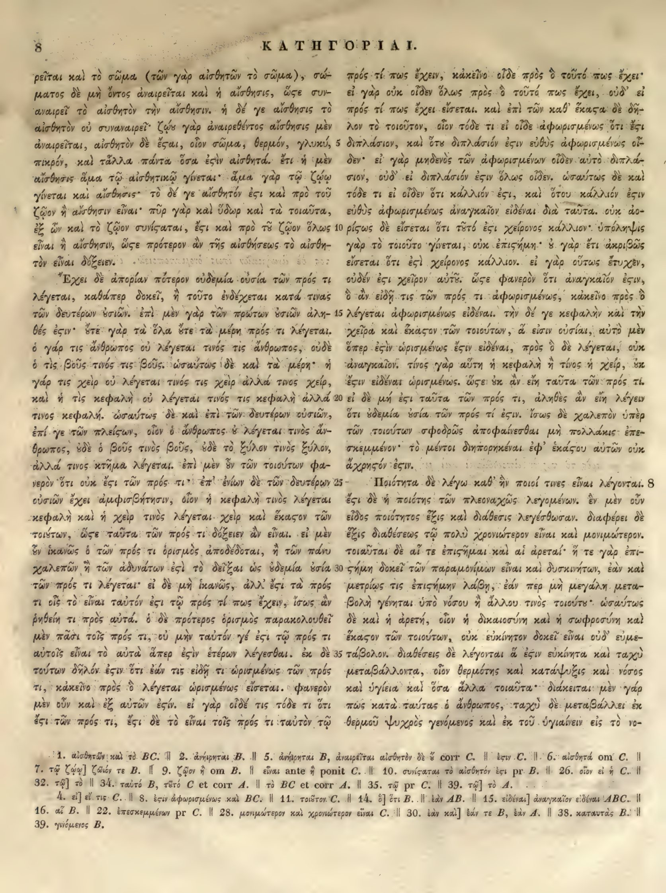

8a
| 1 | ρεῖται καὶ τὸ σῶμα (τῶν γὰρ αἰσθητῶν τὸ σῶμα), σώ- | 0.95 |
|---|---|---|
| 2 | ματος δὲ μὴ ὄντος <choice resp="#MinioPaluelloL1949"><sic>ἀναιρεῖται</sic><corr>ἀνῄρηται</corr></choice> καὶ ἡ αἴσθησις, ὥστε συν- | 0.95 |
| 3 | αναιρεῖ τὸ αἰσθητὸν τὴν αἴσθησιν. ἡ δέ γε αἴσθησις τὸ | 0.95 |
| 4 | αἰσθητὸν οὐ συναναιρεῖ· ζῴου γὰρ ἀναιρεθέντος αἴσθησις μὲν | 0.95 |
| 5 | <choice resp="#MinioPaluelloL1949"><sic>ἀναιρεῖται</sic><corr>ἀνῄρηται</corr></choice>, αἰσθητὸν δὲ ἔσται, οἷον σῶμα, θερμόν, γλυκύ, | 0.95 |
| 6 | πικρόν, καὶ τἆλλα πάντα ὅσα ἐστὶν αἰσθητά. ἔτι ἡ μὲν | 0.95 |
| 7 | αἴσθησις ἅμα τῷ αἰσθητικῷ <choice resp="#MinioPaluelloL1949"><sic>γίνεται</sic><corr>γίγνεται</corr></choice>· ἅμα γὰρ τῷ ζῴῳ | 0.95 |
| 8 | γίνεται καὶ αἴσθησις· τὸ δέ γε αἰσθητὸν ἔστι καὶ πρὸ τοῦ | 0.95 |
| 9 | ζῷον ἢ αἴσθησιν εἶναι· πῦρ γὰρ καὶ ὕδωρ καὶ τὰ τοιαῦτα, | 0.95 |
| 10 | ἐξ ὧν καὶ τὸ ζῷον συνίσταται, ἔστι καὶ πρὸ <choice resp="#MinioPaluelloL1949"><sic>τὸ</sic><corr>τοῦ</corr></choice> ζῷον ὅλως | 0.95 |
| 11 | εἶναι ἢ αἴσθησιν, ὥστε πρότερον ἂν τῆς αἰσθήσεως τὸ αἰσθη- | 0.95 |
| 12 | τὸν εἶναι δόξειεν. | 0.95 |
| 13 | Ἔχει δὲ ἀπορίαν πότερον οὐδεμία οὐσία τῶν πρός τι | 0.95 |
| 14 | λέγεται, καθάπερ δοκεῖ, ἢ τοῦτο ἐνδέχεται κατά τινας | 0.95 |
| 15 | τῶν δευτέρων οὐσιῶν. ἐπὶ μὲν γὰρ τῶν πρώτων οὐσιῶν ἀλη- | 0.95 |
| 16 | θές ἐστιν· οὔτε γὰρ τὰ ὅλα οὔτε τὰ μέρη πρός τι λέγεται. | 0.95 |
| 17 | ὁ γάρ τις ἄνθρωπος οὐ λέγεται τινὸς τις ἄνθρωπος, οὐδὲ | 0.95 |
| 18 | ὁ τὶς βοῦς τινὸς τις βοῦς. ὡσαύτως δὲ καὶ τὰ μέρη· ἡ | 0.95 |
| 19 | γάρ τις χεὶρ οὐ λέγεται τινὸς τις χεὶρ ἀλλά τινος χείρ, | 0.95 |
| 20 | καὶ ἡ τὶς κεφαλὴ οὐ λέγεται τινὸς τις κεφαλὴ ἀλλά | 0.95 |
| 21 | τινος κεφαλή. ὡσαύτως δὲ καὶ ἐπὶ τῶν δευτέρων οὐσιῶν, | 0.95 |
| 22 | ἐπί γε τῶν <choice resp="#MinioPaluelloL1949"><sic>πλείσων</sic><corr>πλείστων</corr></choice>, οἷον ὁ ἄνθρωπος οὐ λέγεται τινὸς ἄν- | 0.95 |
| 23 | θρωπος, οὐδὲ ὁ βοῦς τινὸς βοῦς, οὐδὲ τὸ ξύλον τινὸς ξύλον, | 0.95 |
| 24 | ἀλλά τινος κτῆμα λέγεται. ἐπὶ μὲν οὖν τῶν τοιούτων φα- | 0.95 |
| 25 | νερὸν ὅτι οὐκ ἔστι τῶν πρός τι· ἐπ' ἐνίων δὲ τῶν δευτέρων | 0.95 |
| 26 | οὐσιῶν ἔχει ἀμφισβήτησιν, οἷον ἡ κεφαλὴ τινὸς λέγεται | 0.95 |
| 27 | κεφαλὴ καὶ ἡ χεὶρ τινὸς λέγεται χεὶρ καὶ ἕκαστον τῶν | 0.95 |
| 28 | τοιούτων, ὥστε ταῦτα τῶν πρός τι δόξειεν ἂν εἶναι. εἰ μὲν | 0.95 |
| 29 | οὖν ἱκανῶς ὁ τῶν πρός τι ὁρισμὸς ἀποδέδοται, ἢ τῶν πάνυ | 0.95 |
| 30 | χαλεπῶν ἢ τῶν ἀδυνάτων ἐστὶ τὸ <choice resp="#MinioPaluelloL1949"><sic>δεῖξαι</sic><corr>λῦσαι</corr></choice> ὡς οὐδεμία οὐσία | 0.95 |
| 31 | τῶν πρός τι λέγεται· εἰ δὲ μὴ ἱκανῶς, ἀλλ' ἔστι τὰ πρός | 0.95 |
| 32 | τι οἷς τὸ εἶναι ταὐτόν ἐστι τῷ πρός τί πως ἔχειν, ἴσως ἂν | 0.95 |
| 33 | ῥηθείη τι πρὸς αὐτά. ὁ δὲ πρότερος ὁρισμὸς παρακολουθεῖ | 0.95 |
| 34 | μὲν πᾶσι τοῖς πρός τι, οὐ μὴν <choice resp="#MinioPaluelloL1949"><sic>ταὐτόν</sic><corr>τοῦτό</corr></choice> γέ ἐστι <choice resp="#MinioPaluelloL1949"><sic>τῷ</sic><corr>τὸ</corr></choice> πρός τι | 0.95 |
| 35 | αὐτοῖς εἶναι τὸ αὐτὰ ἅπερ ἐστὶν ἑτέρων λέγεσθαι. ἐκ δὲ | 0.95 |
| 36 | τούτων δῆλόν ἐστιν ὅτι ἐάν τις εἰδῇ τι ὡρισμένως τῶν πρός | 0.95 |
| 37 | τι, κἀκεῖνο πρὸς ὃ λέγεται ὡρισμένως εἴσεται. φανερὸν | 0.95 |
| 38 | μὲν οὖν καὶ ἐξ <choice resp="#MinioPaluelloL1949"><sic>αὐτῶν</sic><corr>αὐτοῦ</corr></choice> ἐστιν. εἰ γὰρ οἶδέ τις τόδε τι ὅτι | 0.95 |
| 39 | ἐστι τῶν πρός τι, ἔστι δὲ τὸ εἶναι τοῖς πρός τι <choice resp="#MinioPaluelloL1949"><sic>ταὐτὸν</sic><corr>ταὐτὸ</corr></choice> τῷ | 0.95 |
8b
| 1 | πρός τί πως ἔχειν, κἀκεῖνο οἶδε πρὸς ὃ τοῦτό πως ἔχει· | 0.95 |
|---|---|---|
| 2 | εἰ γὰρ οὐκ οἶδεν ὅλως πρὸς ὃ <choice resp="#MinioPaluelloL1949"><sic>τοῦτά</sic><corr>τοῦτό</corr></choice> πως ἔχει, οὐδ’ εἰ | 0.95 |
| 3 | τὸ πρός τί πως ἔχει εἴσεται. καὶ ἐπὶ τῶν καθ’ <choice resp="#hathiTrustOCR"><sic>ἕκαςα</sic><corr>ἕκαστα</corr></choice> δὲ δῆ- | 0.95 |
| 4 | λον τὸ τοιοῦτον, οἷον τόδε τι εἰ <choice resp="#MinioPaluelloL1949"><sic>οἶδε</sic><corr>οἶδεν</corr></choice> ἀφωρισμένως ὅτι ἔστι | 0.95 |
| 5 | διπλάσιον, καὶ <choice resp="#MinioPaluelloL1949"><sic>ὅτι</sic><corr>ὅτου</corr></choice> <choice resp="#hathiTrustOCR"><sic>διπλασιόν</sic><corr>διπλάσιον</corr></choice> <choice resp="#hathiTrustOCR"><sic>ἐςιν</sic><corr>ἐστιν</corr></choice> εὐθὺς ἀφωρισμένως οἶ- | 0.95 |
| 6 | δεν· εἰ γὰρ μηδενὸς τῶν ἀφωρισμένων οἶδεν αὐτὸ διπλά- | 0.95 |
| 7 | σιον, οὐδ’ εἰ <choice resp="#hathiTrustOCR"><sic>διπλασιόν</sic><corr>διπλάσιον</corr></choice> <choice resp="#hathiTrustOCR"><sic>ἐςιν</sic><corr>ἐστιν</corr></choice> ὅλως οἶδεν. ὡσαύτως δὲ καὶ | 0.95 |
| 8 | τόδε τι εἰ οἶδεν ὅτι κάλλιόν <choice resp="#hathiTrustOCR"><sic>ἐςι</sic><corr>ἐστι</corr></choice>, καὶ ὅτου κάλλιόν <choice resp="#hathiTrustOCR"><sic>ἐςιν</sic><corr>ἐστιν</corr></choice> | 0.95 |
| 9 | εὐθὺς ἀφωρισμένως ἀναγκαῖον εἰδέναι διὰ ταῦτα. οὐκ ἀο- | 0.95 |
| 10 | <choice resp="#hathiTrustOCR"><sic>ρίςως</sic><corr>ρίστως</corr></choice> δὲ εἴσεται ὅτι τοῦτό <choice resp="#hathiTrustOCR"><sic>ἐςι</sic><corr>ἐστι</corr></choice> <choice resp="#MinioPaluelloL1949"><sic>χεῖρον</sic><corr>χείρονος</corr></choice> κάλλιον· ὑπόληψις | 0.95 |
| 11 | γὰρ τὸ τοιοῦτο <choice resp="#MinioPaluelloL1949"><sic>γίνεται</sic><corr>γίγνεται</corr></choice>, οὐκ ἐπιστήμη· <choice resp="#MinioPaluelloL1949"><sic>ὁ</sic><corr>οὐ</corr></choice> γὰρ ἔτι ἀκριβῶς | 0.95 |
| 12 | εἴσεται ὅτι <choice resp="#hathiTrustOCR"><sic>ἐςὶ</sic><corr>ἐστὶ</corr></choice> <choice resp="#MinioPaluelloL1949"><sic>χεῖρον</sic><corr>χείρονος</corr></choice> κάλλιον. εἰ γὰρ οὕτως ἔτυχεν, | 0.95 |
| 13 | οὐδέν <choice resp="#hathiTrustOCR"><sic>ἐςι</sic><corr>ἐστι</corr></choice> χεῖρον <choice resp="#MinioPaluelloL1949"><sic>αὐτῶ</sic><corr>αὐτοὖ</corr></choice>. <choice resp="#hathiTrustOCR"><sic>ὥςε</sic><corr>ὥστε</corr></choice> φανερὸν ὅτι ἀναγκαῖόν <choice resp="#hathiTrustOCR"><sic>ἐςιν</sic><corr>ἐστιν</corr></choice>, | 0.95 |
| 14 | ὃ ἂν εἰδῇ τις τῶν πρός τι <choice resp="#MinioPaluelloL1949"><sic>ἀφωρισμένως</sic><corr>ὡρισμένως</corr></choice>, κἀκεῖνο πρὸς ὃ | 0.95 |
| 15 | λέγεται <choice resp="#MinioPaluelloL1949"><sic>ἀφωρισμένως</sic><corr>ὡρισμένως</corr></choice> εἰδέναι. τὴν δέ γε κεφαλὴν καὶ τὴν | 0.95 |
| 16 | χεῖρα καὶ ἕκαστον τῶν τοιούτων, ἃ ἐστιν οὐσίαι, αὐτὸ μὲν | 0.95 |
| 17 | ὅπερ <choice resp="#hathiTrustOCR"><sic>ἐςὶν</sic><corr>ἐστὶν</corr></choice> ὡρισμένως <choice resp="#hathiTrustOCR"><sic>ἔςιν</sic><corr>ἔστιν</corr></choice> εἰδέναι, πρὸς ὃ δὲ λέγεται, οὐκ | 0.95 |
| 18 | ἀναγκαῖον. τίνος γὰρ αὕτη ἡ κεφαλὴ ἢ τίνος ἡ χείρ, οὐκ | 0.95 |
| 19 | <choice resp="#hathiTrustOCR"><sic>ἔςιν</sic><corr>ἔστιν</corr></choice> εἰδέναι ὡρισμένως. <choice resp="#hathiTrustOCR"><sic>ὥςε</sic><corr>ὥστε</corr></choice> οὐκ ἂν εἴη ταῦτα τῶν πρός τι. | 0.95 |
| 20 | εἰ δὲ μή <choice resp="#hathiTrustOCR"><sic>ἐςι</sic><corr>ἐστι</corr></choice> ταῦτα τῶν πρός τι, ἀληθὲς ἂν εἴη λέγειν | 0.95 |
| 21 | ὅτι οὐδεμία οὐσία τῶν πρός τί <choice resp="#hathiTrustOCR"><sic>ἐςιν</sic><corr>ἐστιν</corr></choice>. ἴσως δὲ χαλεπὸν <choice resp="#MinioPaluelloL1949"><sic>ὑπὲρ</sic><corr>περὶ</corr></choice> | 0.95 |
| 22 | τῶν τοιούτων σφοδρῶς ἀποφαίνεσθαι μὴ πολλάκις ἐπε- | 0.95 |
| 23 | σκεμμένον· τὸ μέντοι διηπορηκέναι ἐφ’ <choice resp="#hathiTrustOCR"><sic>ἑκάςου</sic><corr>ἑκάστου</corr></choice> αὐτῶν οὐκ | 0.95 |
| 24 | ἄχρηστον <choice resp="#hathiTrustOCR"><sic>ἔςιν</sic><corr>ἔστιν</corr></choice>. | 0.95 |
| Chapter 8 | ||
| 25 | Ποιότητα δὲ λέγω καθ’ ἣν ποιοί τινες εἶναι λέγονται. | 0.95 |
| 26 | ἔστι δὲ ἡ ποιότης τῶν πλεοναχῶς λεγομένων. ἓν μὲν οὖν | 0.95 |
| 27 | εἶδος ποιότητος ἕξις καὶ διάθεσις λεγέσθωσαν. διαφέρει δὲ | 0.95 |
| 28 | ἕξις διαθέσεως τῷ πολὺ χρονιώτερον εἶναι καὶ μονιμώτερον. | 0.95 |
| 29 | τοιαῦται δὲ αἵ τε <choice resp="#hathiTrustOCR"><sic>ἐπιςῆμαι</sic><corr>ἐπιστῆμαι</corr></choice> καὶ αἱ ἀρεταί· ἥ τε γὰρ ἐπι- | 0.95 |
| 30 | στήμη δοκεῖ τῶν παραμονίμων εἶναι καὶ δυσκινήτων, ἐὰν καὶ | 0.95 |
| 31 | μετρίως τις ἐπιστήμην λάβῃ, ἐὰν περ μὴ μεγάλη μετα- | 0.95 |
| 32 | βολὴ γένηται ὑπὸ νόσου ἤ ἄλλου τινὸς τοιούτου· ὡσαύτως | 0.95 |
| 33 | δὲ καὶ ἡ ἀρετή, οἷον ἡ δικαιοσύνη καὶ ἡ σωφροσύνη καὶ | 0.95 |
| 34 | ἕκαστον τῶν τοιούτων, οὐκ εὐκίνητον δοκεῖ εἶναι οὐδ’ εὐμε- | 0.95 |
| 35 | τάβολον. διαθέσεις δὲ λέγονται ἃ <choice resp="#hathiTrustOCR"><sic>ἐςιν</sic><corr>ἐστιν</corr></choice> εὐκίνητα καὶ ταχὺ | 0.95 |
| 36 | μεταβάλλοντα, οἷον θερμότης καὶ κατάψυξις καὶ νόσος | 0.95 |
| 37 | καὶ ὑγίεια καὶ ὅσα ἄλλα τοιαῦτα· διάκειται μὲν γάρ | 0.95 |
| 38 | τι πως κατὰ ταύτας ὁ ἄνθρωπος, ταχὺ δὲ μεταβάλλει ἐκ | 0.95 |
| 39 | θερμοῦ ψυχρὸς <choice resp="#MinioPaluelloL1949"><sic>γενόμενος</sic><corr>γιγνόμενος</corr></choice> καὶ ἐκ τοῦ ὑγιαίνειν εἰς τὸ νο- | 0.95 |
Textual apparatus
- n1 [both] 1. αἰσθητὰν καὶ τὸ BC.
- n2 [both] 2. ἀνῄρηται B.
- n3 [both] 5. ἀνῄρηται B, ἀναιρεῖται αἰσθητὸν δὲ ὡς corr C.
- n4 [both] ἔστιν C.
- n5 [both] 6. αἰσθητὰ om C.
- n6 [both] 7. τῷ ζῴῳ] ζῴόν τε B.
- n7 [both] 9. ζῷον ᾗ om B.
- n8 [both] εἶναι ante ᾗ ponit C.
- n9 [both] 10. συνίσταται τὸ αἰσθητόν ἐστι pr B.
- n10 [both] 26. οἷον εἰ ᾗ C.
- n11 [both] 32. τῷ] τὸ
- n12 [both] 34. ταὐτό B, τετὸ C et corr A.
- n13 [both] τὸ BC et corr A.
- n14 [both] 35. τῷ pr C.
- n15 [both] 39. τῷ] τὸ A.
- n16 [both] 4. εἰ] εἴ τις C.
- n17 [both] 8. ἐστιν ἀφωρισμένως καὶ BC.
- n18 [both] 11. τοιοῦτον C.
- n19 [both] 14. ὃ] ὅτι B.
- n20 [both] ἐὰν AB.
- n21 [both] 15. εἰδέναι] ἀναγκαῖον εἰδέναι ABC.
- n22 [both] 16. αἱ B.
- n23 [both] 22. ἐπεσκεμμένων pr C.
- n24 [both] 28. μονιμώτερον καὶ χρονιώτερον εἶναι C.
- n25 [both] 30. ἐὰν καὶ] ἐάν τε B, ἐὰν A.
- n26 [both] 38. καταντὰς B.
- n27 [both] 39. γινόμενος B.
Verifier issues
- error column_b, line 25: The marginal chapter numeral 8 is included in text_grc ('...λέγονται. 8'). Chapter/section numerals must be stored as MarginalMarker records and must not appear in text_grc.
- error column_a, line 10: The scan reads 'πρὸ τοῦ ζῴου'; the extraction has 'πρὸ τὸ ζῷον', omitting the article τοῦ and misreading the genitive.
- error column_b, lines 5 and 7: The scan reads 'διπλάσιον'; the extraction has 'διπλασιόν' (missing the sigma).
- error column_b, line 10: The scan reads 'χεῖρον κάλλιον'; the extraction has 'χεῖρον κάλλιον' but the apparatus indicates 'κάλλιον' should be 'κάλλιον' (no issue) — however the apparatus note n12 reads 'τετὸ C' which is a misreading of 'ταὐτὸ C'.
- error column_b, line 13: The scan reads 'αὐτῶ' (dative); the extraction has 'αὐτῶ' which is correct, but the apparatus note n12 'τετὸ C' is a misreading of 'ταὐτὸ C'.
- error column_b, line 38: The scan reads 'κατὰ ταύτας'; the extraction has 'κατὰ ταύτας' but the apparatus note n26 reads 'καταντὰς B' which is a misreading of 'κατὰ ταύτας B'.
- error column_b, line 39: The scan reads 'γενόμενος'; the extraction has 'γενόμενος' but the apparatus note n27 reads 'γινόμενος B' which is a misreading of 'γενόμενος B'.
- warning 8b3: possible gutter-copy artifact; column A ends and column B begins with
τὸ.
All Greek-word differences from Minio–Paluello, L. 1949 (70)
This inventory is exhaustive at the Greek-word level; it does not imply that either reading is an error.
- replace 7b39: ἀναι ρεῖται ↔ ἀνῄρηται (anchors: ἀναιρεθέντος … καὶ)
- delete 8a1: τὸ ↔ ∅ (anchors: καὶ … σῶμα)
- insert 8a1: ∅ ↔ καὶ (anchors: αἰσθητῶν … τὸ)
- replace 8a2: ἀναιρεῖται ↔ ἀνῄρηται (anchors: ὄντος … καὶ)
- orthographic_or_diacritic 8a4: οὐ ↔ οὔ (anchors: αἰσθητὸν … συναναιρεῖ)
- delete 8a4: συναναιρεῖ ↔ ∅ (anchors: οὐ … ζῴου)
- replace 8a5: ἀναιρεῖται ↔ ἀνῄρηται (anchors: μὲν … αἰσθητὸν)
- replace 8a6: τἆλλα ↔ τὰ ἄλλα (anchors: καὶ … πάντα)
- replace 8a7: γίνεται ↔ γίγνεται (anchors: αἰσθητικῷ … ἅμα)
- replace 8a7: τῷ ζῴῳ γίνεται ↔ ζῷόν τε γίγνεται (anchors: γὰρ … καὶ)
- delete 8a9: ζῷον ἢ ↔ ∅ (anchors: τοῦ … αἴσθησιν)
- replace 8a10: τὸ ↔ τοῦ (anchors: πρὸ … ζῷον)
- orthographic_or_diacritic 8a17: γάρ ↔ γὰρ (anchors: ὁ … τις)
- orthographic_or_diacritic 8a17: τις ↔ τὶς (anchors: γάρ … ἄνθρωπος)
- orthographic_or_diacritic 8a17: τινὸς ↔ τινός (anchors: λέγεται … τις)
- orthographic_or_diacritic 8a18: τινὸς ↔ τινός (anchors: βοῦς … τις)
- orthographic_or_diacritic 8a19: γάρ ↔ γὰρ (anchors: ἡ … τις)
- orthographic_or_diacritic 8a19: τις ↔ τὶς (anchors: γάρ … χεὶρ)
- orthographic_or_diacritic 8a19: τινὸς ↔ τινός (anchors: λέγεται … τις)
- orthographic_or_diacritic 8a19: ἀλλά ↔ ἀλλὰ (anchors: χεὶρ … τινος)
- orthographic_or_diacritic 8a19: τινος ↔ τινὸς (anchors: ἀλλά … χείρ)
- orthographic_or_diacritic 8a20: τινὸς ↔ τινός (anchors: λέγεται … τις)
- orthographic_or_diacritic 8a20: ἀλλά ↔ ἀλλὰ (anchors: κεφαλὴ … τινος)
- orthographic_or_diacritic 8a21: τινος ↔ τινὸς (anchors: ἀλλά … κεφαλή)
- replace 8a22: πλείσων ↔ πλείστων (anchors: τῶν … οἷον)
- orthographic_or_diacritic 8a24: ἀλλά ↔ ἀλλὰ (anchors: ξύλον … τινος)
- orthographic_or_diacritic 8a24: τινος ↔ τινὸς (anchors: ἀλλά … κτῆμα)
- replace 8a30: δεῖξαι ↔ λῦσαι (anchors: τὸ … ὡς)
- replace 8a34: ταὐτόν ↔ τοῦτό (anchors: μὴν … γέ)
- replace 8a34: τῷ ↔ τὸ (anchors: ἐστι … πρός)
- replace 8a38: αὐτῶν ↔ αὐτοῦ (anchors: ἐξ … ἐστιν)
- orthographic_or_diacritic 8a38: ἐστιν ↔ ἐστίν (anchors: αὐτῶν … εἰ)
- delete 8a39: ἐστι ↔ ∅ (anchors: ὅτι … τῶν)
- orthographic_or_diacritic 8a39: τι ↔ τί (anchors: πρός … ἔστι)
- insert 8a39: ∅ ↔ ἐστιν (anchors: τι … ἔστι)
- replace 8a39: ταὐτὸν ↔ ταὐτὸ (anchors: τι … τῷ)
- replace 8b2: τοῦτά ↔ τοῦτό (anchors: ὃ … πως)
- delete 8b3: τὸ ↔ ∅ (anchors: εἰ … πρός)
- replace 8b4: οἶδε ↔ οἶδεν (anchors: εἰ … ἀφωρισμένως)
- replace 8b5: ὅτι ↔ ὅτου (anchors: καὶ … διπλασιόν)
- orthographic_or_diacritic 8b5: διπλασιόν ↔ διπλάσιόν (anchors: ὅτι … ἐστιν)
- insert 8b7: ∅ ↔ ἔστι (anchors: εἰ … διπλασιόν)
- orthographic_or_diacritic 8b7: διπλασιόν ↔ διπλάσιον (anchors: εἰ … ἐστιν)
- delete 8b7: ἐστιν ↔ ∅ (anchors: διπλασιόν … ὅλως)
- delete 8b9: εὐθὺς ↔ ∅ (anchors: ἐστιν … ἀφωρισμένως)
- replace 8b10: χεῖρον ↔ χείρονος (anchors: ἐστι … κάλλιον)
- replace 8b11: γίνεται ↔ γίγνεται (anchors: τοιοῦτο … οὐκ)
- replace 8b11: ὁ ↔ οὐ (anchors: ἐπιστήμη … γὰρ)
- insert 8b11: ∅ ↔ εἴσεται (anchors: ἔτι … ἀκριβῶς)
- delete 8b12: εἴσεται ↔ ∅ (anchors: ἀκριβῶς … ὅτι)
- replace 8b12: χεῖρον ↔ χείρονος (anchors: ἐστὶ … κάλλιον)
- replace 8b13: αὐτῶ ↔ αὐτοὖ (anchors: χεῖρον … ὥστε)
- replace 8b14: ἀφωρισμένως ↔ ὡρισμένως (anchors: τι … κἀκεῖνο)
- replace 8b15: ἀφωρισμένως ↔ ὡρισμένως (anchors: λέγεται … εἰδέναι)
- replace 8b16: ἃ ἐστιν ↔ αἵ εἰσιν (anchors: τοιούτων … οὐσίαι)
- orthographic_or_diacritic 8b18: χείρ ↔ χεὶρ (anchors: ἡ … οὐκ)
- delete 8b20: ταῦτα ↔ ∅ (anchors: ἐστι … τῶν)
- replace 8b21: ὑπὲρ ↔ περὶ (anchors: χαλεπὸν … τῶν)
- replace 8b23: ἑκάστου ↔ ἕκαστον (anchors: ἐφ … αὐτῶν)
- orthographic_or_diacritic 8b24: ἄχρηστον ↔ ἄχρηστόν (anchors: οὐκ … ἔστιν)
- orthographic_or_diacritic 8b24: ἔστιν ↔ ἐστιν (anchors: ἄχρηστον … Ποιότητα)
- delete 8b25: εἶναι ↔ ∅ (anchors: τινες … λέγονται)
- replace 8b28: πολὺ χρονιώτερον ↔ μονιμώτερον καὶ πολυχρονιώτερον (anchors: τῷ … εἶναι)
- delete 8b28: καὶ μονιμώτερον ↔ ∅ (anchors: εἶναι … τοιαῦται)
- replace 8b31: ἐὰν περ ↔ ἐάνπερ (anchors: λάβῃ … μὴ)
- orthographic_or_diacritic 8b32: ἤ ↔ ἢ (anchors: νόσου … ἄλλου)
- orthographic_or_diacritic 8b35: ἃ ↔ ἅ (anchors: λέγονται … ἐστιν)
- delete 8b38: τι ↔ ∅ (anchors: γάρ … πως)
- replace 8b39: γενόμενος ↔ γιγνόμενος (anchors: ψυχρὸς … καὶ)
- replace 8b39: νο σεῖν ↔ νοσεῖν (anchors: τὸ … ὡσαύτως)
Encoded TEI choices (45)
- b5
#hathiTrustOCR: <choice resp="#hathiTrustOCR"><sic>διπλασιόν</sic><corr>διπλάσιον</corr></choice> (0.90) — The scan clearly shows the acute accent on the antepenultimate syllable: διπλάσιον. The extraction's 'διπλασιόν' is incorrect. - b7
#hathiTrustOCR: <choice resp="#hathiTrustOCR"><sic>διπλασιόν</sic><corr>διπλάσιον</corr></choice> (0.90) — The scan shows the accent on the antepenultimate syllable: διπλάσιον. The extraction's 'διπλασιόν' is incorrect. - b3
#hathiTrustOCR: <choice resp="#hathiTrustOCR"><sic>ἕκαςα</sic><corr>ἕκαστα</corr></choice> (1.00) — Aligned Hathi στ-ligature OCR correction: deterministic repair of the Hathi internal final sigma agrees with the scan and reference crop. - b5
#hathiTrustOCR: <choice resp="#hathiTrustOCR"><sic>ἐςιν</sic><corr>ἐστιν</corr></choice> (1.00) — Aligned Hathi στ-ligature OCR correction: deterministic repair of the Hathi internal final sigma agrees with the scan and reference crop. - b7
#hathiTrustOCR: <choice resp="#hathiTrustOCR"><sic>ἐςιν</sic><corr>ἐστιν</corr></choice> (1.00) — Aligned Hathi στ-ligature OCR correction: deterministic repair of the Hathi internal final sigma agrees with the scan and reference crop. - b8
#hathiTrustOCR: <choice resp="#hathiTrustOCR"><sic>ἐςι</sic><corr>ἐστι</corr></choice> (1.00) — Aligned Hathi στ-ligature OCR correction: deterministic repair of the Hathi internal final sigma agrees with the scan and reference crop. - b8
#hathiTrustOCR: <choice resp="#hathiTrustOCR"><sic>ἐςιν</sic><corr>ἐστιν</corr></choice> (1.00) — Aligned Hathi στ-ligature OCR correction: deterministic repair of the Hathi internal final sigma agrees with the scan and reference crop. - b10
#hathiTrustOCR: <choice resp="#hathiTrustOCR"><sic>ρίςως</sic><corr>ρίστως</corr></choice> (1.00) — Aligned Hathi στ-ligature OCR correction: deterministic repair of the Hathi internal final sigma agrees with the scan and reference crop. - b10
#hathiTrustOCR: <choice resp="#hathiTrustOCR"><sic>ἐςι</sic><corr>ἐστι</corr></choice> (1.00) — Aligned Hathi στ-ligature OCR correction: deterministic repair of the Hathi internal final sigma agrees with the scan and reference crop. - b12
#hathiTrustOCR: <choice resp="#hathiTrustOCR"><sic>ἐςὶ</sic><corr>ἐστὶ</corr></choice> (1.00) — Aligned Hathi στ-ligature OCR correction: deterministic repair of the Hathi internal final sigma agrees with the scan and reference crop. - b13
#hathiTrustOCR: <choice resp="#hathiTrustOCR"><sic>ἐςι</sic><corr>ἐστι</corr></choice> (1.00) — Aligned Hathi στ-ligature OCR correction: deterministic repair of the Hathi internal final sigma agrees with the scan and reference crop. - b13
#hathiTrustOCR: <choice resp="#hathiTrustOCR"><sic>ὥςε</sic><corr>ὥστε</corr></choice> (1.00) — Aligned Hathi στ-ligature OCR correction: deterministic repair of the Hathi internal final sigma agrees with the scan and reference crop. - b13
#hathiTrustOCR: <choice resp="#hathiTrustOCR"><sic>ἐςιν</sic><corr>ἐστιν</corr></choice> (1.00) — Aligned Hathi στ-ligature OCR correction: deterministic repair of the Hathi internal final sigma agrees with the scan and reference crop. - b17
#hathiTrustOCR: <choice resp="#hathiTrustOCR"><sic>ἐςὶν</sic><corr>ἐστὶν</corr></choice> (1.00) — Aligned Hathi στ-ligature OCR correction: deterministic repair of the Hathi internal final sigma agrees with the scan and reference crop. - b17
#hathiTrustOCR: <choice resp="#hathiTrustOCR"><sic>ἔςιν</sic><corr>ἔστιν</corr></choice> (1.00) — Aligned Hathi στ-ligature OCR correction: deterministic repair of the Hathi internal final sigma agrees with the scan and reference crop. - b19
#hathiTrustOCR: <choice resp="#hathiTrustOCR"><sic>ἔςιν</sic><corr>ἔστιν</corr></choice> (1.00) — Aligned Hathi στ-ligature OCR correction: deterministic repair of the Hathi internal final sigma agrees with the scan and reference crop. - b19
#hathiTrustOCR: <choice resp="#hathiTrustOCR"><sic>ὥςε</sic><corr>ὥστε</corr></choice> (1.00) — Aligned Hathi στ-ligature OCR correction: deterministic repair of the Hathi internal final sigma agrees with the scan and reference crop. - b20
#hathiTrustOCR: <choice resp="#hathiTrustOCR"><sic>ἐςι</sic><corr>ἐστι</corr></choice> (1.00) — Aligned Hathi στ-ligature OCR correction: deterministic repair of the Hathi internal final sigma agrees with the scan and reference crop. - b21
#hathiTrustOCR: <choice resp="#hathiTrustOCR"><sic>ἐςιν</sic><corr>ἐστιν</corr></choice> (1.00) — Aligned Hathi στ-ligature OCR correction: deterministic repair of the Hathi internal final sigma agrees with the scan and reference crop. - b23
#hathiTrustOCR: <choice resp="#hathiTrustOCR"><sic>ἑκάςου</sic><corr>ἑκάστου</corr></choice> (1.00) — Aligned Hathi στ-ligature OCR correction: deterministic repair of the Hathi internal final sigma agrees with the scan and reference crop. - b24
#hathiTrustOCR: <choice resp="#hathiTrustOCR"><sic>ἔςιν</sic><corr>ἔστιν</corr></choice> (1.00) — Aligned Hathi στ-ligature OCR correction: deterministic repair of the Hathi internal final sigma agrees with the scan and reference crop. - b29
#hathiTrustOCR: <choice resp="#hathiTrustOCR"><sic>ἐπιςῆμαι</sic><corr>ἐπιστῆμαι</corr></choice> (1.00) — Aligned Hathi στ-ligature OCR correction: deterministic repair of the Hathi internal final sigma agrees with the scan and reference crop. - b35
#hathiTrustOCR: <choice resp="#hathiTrustOCR"><sic>ἐςιν</sic><corr>ἐστιν</corr></choice> (1.00) — Aligned Hathi στ-ligature OCR correction: deterministic repair of the Hathi internal final sigma agrees with the scan and reference crop. - a10
#MinioPaluelloL1949: <choice resp="#MinioPaluelloL1949"><sic>τὸ</sic><corr>τοῦ</corr></choice> (1.00) — Control-edition confirmation of the compact Berlin Bekker ου ligature; the OCR omitted upsilon and produced an impossible or contextually invalid Greek form. - b11
#MinioPaluelloL1949: <choice resp="#MinioPaluelloL1949"><sic>ὁ</sic><corr>οὐ</corr></choice> (1.00) — Control-edition confirmation of the compact Berlin Bekker ου ligature; the OCR omitted upsilon and produced an impossible or contextually invalid Greek form. - b13
#MinioPaluelloL1949: <choice resp="#MinioPaluelloL1949"><sic>αὐτῶ</sic><corr>αὐτοὖ</corr></choice> (1.00) — Control-edition confirmation of the compact Berlin Bekker ου ligature; the OCR omitted upsilon and produced an impossible or contextually invalid Greek form. - a2
#MinioPaluelloL1949: <choice resp="#MinioPaluelloL1949"><sic>ἀναιρεῖται</sic><corr>ἀνῄρηται</corr></choice> (0.90) — Plausible one-token difference in the globally aligned Minio–Paluello, L. 1949; surrounding token sequence is stable. - a5
#MinioPaluelloL1949: <choice resp="#MinioPaluelloL1949"><sic>ἀναιρεῖται</sic><corr>ἀνῄρηται</corr></choice> (0.90) — Plausible one-token difference in the globally aligned Minio–Paluello, L. 1949; surrounding token sequence is stable. - a7
#MinioPaluelloL1949: <choice resp="#MinioPaluelloL1949"><sic>γίνεται</sic><corr>γίγνεται</corr></choice> (0.90) — Plausible one-token difference in the globally aligned Minio–Paluello, L. 1949; surrounding token sequence is stable. - a22
#MinioPaluelloL1949: <choice resp="#MinioPaluelloL1949"><sic>πλείσων</sic><corr>πλείστων</corr></choice> (0.90) — Plausible one-token difference in the globally aligned Minio–Paluello, L. 1949; surrounding token sequence is stable. - a30
#MinioPaluelloL1949: <choice resp="#MinioPaluelloL1949"><sic>δεῖξαι</sic><corr>λῦσαι</corr></choice> (0.90) — Plausible one-token difference in the globally aligned Minio–Paluello, L. 1949; surrounding token sequence is stable. - a34
#MinioPaluelloL1949: <choice resp="#MinioPaluelloL1949"><sic>ταὐτόν</sic><corr>τοῦτό</corr></choice> (0.90) — Plausible one-token difference in the globally aligned Minio–Paluello, L. 1949; surrounding token sequence is stable. - a34
#MinioPaluelloL1949: <choice resp="#MinioPaluelloL1949"><sic>τῷ</sic><corr>τὸ</corr></choice> (0.90) — Plausible one-token difference in the globally aligned Minio–Paluello, L. 1949; surrounding token sequence is stable. - a38
#MinioPaluelloL1949: <choice resp="#MinioPaluelloL1949"><sic>αὐτῶν</sic><corr>αὐτοῦ</corr></choice> (0.90) — Plausible one-token difference in the globally aligned Minio–Paluello, L. 1949; surrounding token sequence is stable. - a39
#MinioPaluelloL1949: <choice resp="#MinioPaluelloL1949"><sic>ταὐτὸν</sic><corr>ταὐτὸ</corr></choice> (0.90) — Plausible one-token difference in the globally aligned Minio–Paluello, L. 1949; surrounding token sequence is stable. - b2
#MinioPaluelloL1949: <choice resp="#MinioPaluelloL1949"><sic>τοῦτά</sic><corr>τοῦτό</corr></choice> (0.90) — Plausible one-token difference in the globally aligned Minio–Paluello, L. 1949; surrounding token sequence is stable. - b4
#MinioPaluelloL1949: <choice resp="#MinioPaluelloL1949"><sic>οἶδε</sic><corr>οἶδεν</corr></choice> (0.90) — Plausible one-token difference in the globally aligned Minio–Paluello, L. 1949; surrounding token sequence is stable. - b5
#MinioPaluelloL1949: <choice resp="#MinioPaluelloL1949"><sic>ὅτι</sic><corr>ὅτου</corr></choice> (0.90) — Plausible one-token difference in the globally aligned Minio–Paluello, L. 1949; surrounding token sequence is stable. - b10
#MinioPaluelloL1949: <choice resp="#MinioPaluelloL1949"><sic>χεῖρον</sic><corr>χείρονος</corr></choice> (0.90) — Plausible one-token difference in the globally aligned Minio–Paluello, L. 1949; surrounding token sequence is stable. - b11
#MinioPaluelloL1949: <choice resp="#MinioPaluelloL1949"><sic>γίνεται</sic><corr>γίγνεται</corr></choice> (0.90) — Plausible one-token difference in the globally aligned Minio–Paluello, L. 1949; surrounding token sequence is stable. - b12
#MinioPaluelloL1949: <choice resp="#MinioPaluelloL1949"><sic>χεῖρον</sic><corr>χείρονος</corr></choice> (0.90) — Plausible one-token difference in the globally aligned Minio–Paluello, L. 1949; surrounding token sequence is stable. - b14
#MinioPaluelloL1949: <choice resp="#MinioPaluelloL1949"><sic>ἀφωρισμένως</sic><corr>ὡρισμένως</corr></choice> (0.90) — Plausible one-token difference in the globally aligned Minio–Paluello, L. 1949; surrounding token sequence is stable. - b15
#MinioPaluelloL1949: <choice resp="#MinioPaluelloL1949"><sic>ἀφωρισμένως</sic><corr>ὡρισμένως</corr></choice> (0.90) — Plausible one-token difference in the globally aligned Minio–Paluello, L. 1949; surrounding token sequence is stable. - b21
#MinioPaluelloL1949: <choice resp="#MinioPaluelloL1949"><sic>ὑπὲρ</sic><corr>περὶ</corr></choice> (0.90) — Plausible one-token difference in the globally aligned Minio–Paluello, L. 1949; surrounding token sequence is stable. - b39
#MinioPaluelloL1949: <choice resp="#MinioPaluelloL1949"><sic>γενόμενος</sic><corr>γιγνόμενος</corr></choice> (0.90) — Plausible one-token difference in the globally aligned Minio–Paluello, L. 1949; surrounding token sequence is stable.
Unmatched Hathi OCR words (89)
Compared after στ/ου normalization and scan-attested line-end dehyphenation. OCR line numbers refer to the Hathi text file.
| Normalized | Raw OCR | OCR line | Context |
|---|---|---|---|
| κατηγοριαι | κατηγοριαι | 3 | .00 ⏎ ΚΑΤΗΓΟΡΙΑΙ. ⏎ ρεῖται καὶ τὸ σῶμα (τῶν γὰρ αἰσθητῶν τὸ σῶμα), σώς πρός τί πως ἔχειν, κἀκεῖνο οἶδε πρὸς ὁ τοῦτό πως ἔχει |
| σώς | σώς | 4 | ΚΑΤΗΓΟΡΙΑΙ. ⏎ ρεῖται καὶ τὸ σῶμα (τῶν γὰρ αἰσθητῶν τὸ σῶμα), σώς πρός τί πως ἔχειν, κἀκεῖνο οἶδε πρὸς ὁ τοῦτό πως ἔχει ⏎ ματος δὲ μὴ ὄντος ἀναιρεῖται καὶ ἡ αἴσθησις, ώςε συν εἰ γὰρ οὐκ οἶδεν ὅλως πρὸς ὁ τοῦτό πως ἔχει, οὐδ' εἰ |
| ματος | ματος | 5 | ρεῖται καὶ τὸ σῶμα (τῶν γὰρ αἰσθητῶν τὸ σῶμα), σώς πρός τί πως ἔχειν, κἀκεῖνο οἶδε πρὸς ὁ τοῦτό πως ἔχει ⏎ ματος δὲ μὴ ὄντος ἀναιρεῖται καὶ ἡ αἴσθησις, ώςε συν εἰ γὰρ οὐκ οἶδεν ὅλως πρὸς ὁ τοῦτό πως ἔχει, οὐδ' εἰ ⏎ αναιρεῖ τὸ αἰσθητὸν τὴν αἴσθησιν. ἡ δέ γε αἴσθησις τὸ πρός τί πως ἔχει εἴσεται. καὶ ἐπὶ τῶν καθ᾽ ἕκαςα δὲ δῆ |
| ώστε | ώςε | 5 | ρεῖται καὶ τὸ σῶμα (τῶν γὰρ αἰσθητῶν τὸ σῶμα), σώς πρός τί πως ἔχειν, κἀκεῖνο οἶδε πρὸς ὁ τοῦτό πως ἔχει ⏎ ματος δὲ μὴ ὄντος ἀναιρεῖται καὶ ἡ αἴσθησις, ώςε συν εἰ γὰρ οὐκ οἶδεν ὅλως πρὸς ὁ τοῦτό πως ἔχει, οὐδ' εἰ ⏎ αναιρεῖ τὸ αἰσθητὸν τὴν αἴσθησιν. ἡ δέ γε αἴσθησις τὸ πρός τί πως ἔχει εἴσεται. καὶ ἐπὶ τῶν καθ᾽ ἕκαςα δὲ δῆ |
| συν | συν | 5 | ρεῖται καὶ τὸ σῶμα (τῶν γὰρ αἰσθητῶν τὸ σῶμα), σώς πρός τί πως ἔχειν, κἀκεῖνο οἶδε πρὸς ὁ τοῦτό πως ἔχει ⏎ ματος δὲ μὴ ὄντος ἀναιρεῖται καὶ ἡ αἴσθησις, ώςε συν εἰ γὰρ οὐκ οἶδεν ὅλως πρὸς ὁ τοῦτό πως ἔχει, οὐδ' εἰ ⏎ αναιρεῖ τὸ αἰσθητὸν τὴν αἴσθησιν. ἡ δέ γε αἴσθησις τὸ πρός τί πως ἔχει εἴσεται. καὶ ἐπὶ τῶν καθ᾽ ἕκαςα δὲ δῆ |
| αναιρεῖ | αναιρεῖ | 6 | ματος δὲ μὴ ὄντος ἀναιρεῖται καὶ ἡ αἴσθησις, ώςε συν εἰ γὰρ οὐκ οἶδεν ὅλως πρὸς ὁ τοῦτό πως ἔχει, οὐδ' εἰ ⏎ αναιρεῖ τὸ αἰσθητὸν τὴν αἴσθησιν. ἡ δέ γε αἴσθησις τὸ πρός τί πως ἔχει εἴσεται. καὶ ἐπὶ τῶν καθ᾽ ἕκαςα δὲ δῆ ⏎ αἰσθητὸν οὐ συναναιρεῖ ζών γὰρ ἀναιρεθέντος αἴσθησις μὲν λον τὸ τοιοῦτον, οἷον τόδε τι εἰ οἶδε ἀφωρισμένως ὅτι ἔτι . |
| καθ᾽ | καθ᾽ | 6 | ματος δὲ μὴ ὄντος ἀναιρεῖται καὶ ἡ αἴσθησις, ώςε συν εἰ γὰρ οὐκ οἶδεν ὅλως πρὸς ὁ τοῦτό πως ἔχει, οὐδ' εἰ ⏎ αναιρεῖ τὸ αἰσθητὸν τὴν αἴσθησιν. ἡ δέ γε αἴσθησις τὸ πρός τί πως ἔχει εἴσεται. καὶ ἐπὶ τῶν καθ᾽ ἕκαςα δὲ δῆ ⏎ αἰσθητὸν οὐ συναναιρεῖ ζών γὰρ ἀναιρεθέντος αἴσθησις μὲν λον τὸ τοιοῦτον, οἷον τόδε τι εἰ οἶδε ἀφωρισμένως ὅτι ἔτι . |
| δῆ | δῆ | 6 | ματος δὲ μὴ ὄντος ἀναιρεῖται καὶ ἡ αἴσθησις, ώςε συν εἰ γὰρ οὐκ οἶδεν ὅλως πρὸς ὁ τοῦτό πως ἔχει, οὐδ' εἰ ⏎ αναιρεῖ τὸ αἰσθητὸν τὴν αἴσθησιν. ἡ δέ γε αἴσθησις τὸ πρός τί πως ἔχει εἴσεται. καὶ ἐπὶ τῶν καθ᾽ ἕκαςα δὲ δῆ ⏎ αἰσθητὸν οὐ συναναιρεῖ ζών γὰρ ἀναιρεθέντος αἴσθησις μὲν λον τὸ τοιοῦτον, οἷον τόδε τι εἰ οἶδε ἀφωρισμένως ὅτι ἔτι . |
| ζών | ζών | 7 | αναιρεῖ τὸ αἰσθητὸν τὴν αἴσθησιν. ἡ δέ γε αἴσθησις τὸ πρός τί πως ἔχει εἴσεται. καὶ ἐπὶ τῶν καθ᾽ ἕκαςα δὲ δῆ ⏎ αἰσθητὸν οὐ συναναιρεῖ ζών γὰρ ἀναιρεθέντος αἴσθησις μὲν λον τὸ τοιοῦτον, οἷον τόδε τι εἰ οἶδε ἀφωρισμένως ὅτι ἔτι . ⏎ ἀναιρεῖται, αἰσθητὸν δὲ ἔςαι, οἷον σῶμα, θερμόν, γλυκύ, 5 διπλάσιον, καὶ ὅτε διπλάσιόν ἐςιν εὐθὺς ἀφωρισμένως οι |
| λον | λον | 7 | αναιρεῖ τὸ αἰσθητὸν τὴν αἴσθησιν. ἡ δέ γε αἴσθησις τὸ πρός τί πως ἔχει εἴσεται. καὶ ἐπὶ τῶν καθ᾽ ἕκαςα δὲ δῆ ⏎ αἰσθητὸν οὐ συναναιρεῖ ζών γὰρ ἀναιρεθέντος αἴσθησις μὲν λον τὸ τοιοῦτον, οἷον τόδε τι εἰ οἶδε ἀφωρισμένως ὅτι ἔτι . ⏎ ἀναιρεῖται, αἰσθητὸν δὲ ἔςαι, οἷον σῶμα, θερμόν, γλυκύ, 5 διπλάσιον, καὶ ὅτε διπλάσιόν ἐςιν εὐθὺς ἀφωρισμένως οι |
| διπλάσιόν | διπλάσιόν | 8 | αἰσθητὸν οὐ συναναιρεῖ ζών γὰρ ἀναιρεθέντος αἴσθησις μὲν λον τὸ τοιοῦτον, οἷον τόδε τι εἰ οἶδε ἀφωρισμένως ὅτι ἔτι . ⏎ ἀναιρεῖται, αἰσθητὸν δὲ ἔςαι, οἷον σῶμα, θερμόν, γλυκύ, 5 διπλάσιον, καὶ ὅτε διπλάσιόν ἐςιν εὐθὺς ἀφωρισμένως οι ⏎ πικρόν, καὶ τἆλλα πάντα ὅσα ἐςὶν αἰσθητά. ἔτι ἡ μὲν δεν· εἰ γὰρ μηδενὸς τῶν ἀφωρισμένων οἶδεν αὐτὸ διπλά- |
| οι | οι | 8 | αἰσθητὸν οὐ συναναιρεῖ ζών γὰρ ἀναιρεθέντος αἴσθησις μὲν λον τὸ τοιοῦτον, οἷον τόδε τι εἰ οἶδε ἀφωρισμένως ὅτι ἔτι . ⏎ ἀναιρεῖται, αἰσθητὸν δὲ ἔςαι, οἷον σῶμα, θερμόν, γλυκύ, 5 διπλάσιον, καὶ ὅτε διπλάσιόν ἐςιν εὐθὺς ἀφωρισμένως οι ⏎ πικρόν, καὶ τἆλλα πάντα ὅσα ἐςὶν αἰσθητά. ἔτι ἡ μὲν δεν· εἰ γὰρ μηδενὸς τῶν ἀφωρισμένων οἶδεν αὐτὸ διπλά- |
| δεν | δεν | 9 | ἀναιρεῖται, αἰσθητὸν δὲ ἔςαι, οἷον σῶμα, θερμόν, γλυκύ, 5 διπλάσιον, καὶ ὅτε διπλάσιόν ἐςιν εὐθὺς ἀφωρισμένως οι ⏎ πικρόν, καὶ τἆλλα πάντα ὅσα ἐςὶν αἰσθητά. ἔτι ἡ μὲν δεν· εἰ γὰρ μηδενὸς τῶν ἀφωρισμένων οἶδεν αὐτὸ διπλά- ⏎ αἴσθησις ἅμα τῷ αἰσθητικῷ γίνεται· ἅμα γὰρ τῷ ζῴῳ σιον, οὐδ' εἰ διπλάσιον ἐςιν ὅλως οἶδεν. ὡσαύτως δὲ καὶ |
| αἴσθητόν | αἴσθητόν | 11 | αἴσθησις ἅμα τῷ αἰσθητικῷ γίνεται· ἅμα γὰρ τῷ ζῴῳ σιον, οὐδ' εἰ διπλάσιον ἐςιν ὅλως οἶδεν. ὡσαύτως δὲ καὶ ⏎ γίνεται καὶ αἴσθησις· τὸ δέ γε αἴσθητόν ἐςι καὶ πρὸ τοῦ τόδε τι εἰ οἶδεν ὅτι κάλλιόν ἐςι, καὶ ὅτου κάλλιόν ἐςιν ⏎ ζῷον ἢ αἴσθησιν εἶναι· πῦρ γὰρ καὶ ὕδωρ καὶ τὰ τοιαῦτα, εὐθὺς ἀφωρισμένως ἀναγκαῖον εἰδέναι διὰ ταῦτα. οὐκ ἀστ |
| ἀστ | ἀστ | 12 | γίνεται καὶ αἴσθησις· τὸ δέ γε αἴσθητόν ἐςι καὶ πρὸ τοῦ τόδε τι εἰ οἶδεν ὅτι κάλλιόν ἐςι, καὶ ὅτου κάλλιόν ἐςιν ⏎ ζῷον ἢ αἴσθησιν εἶναι· πῦρ γὰρ καὶ ὕδωρ καὶ τὰ τοιαῦτα, εὐθὺς ἀφωρισμένως ἀναγκαῖον εἰδέναι διὰ ταῦτα. οὐκ ἀστ ⏎ ἐξ ὧν καὶ τὸ ζῷον συνίςαται, ἔτι καὶ πρὸ τῆ ζῷον ὅλως 10 ρίςως δὲ εἴσεται ὅτι τῖτό ἐςι χείρονος κάλλιον· ὑπόληψις |
| τῆ | τῆ | 13 | ζῷον ἢ αἴσθησιν εἶναι· πῦρ γὰρ καὶ ὕδωρ καὶ τὰ τοιαῦτα, εὐθὺς ἀφωρισμένως ἀναγκαῖον εἰδέναι διὰ ταῦτα. οὐκ ἀστ ⏎ ἐξ ὧν καὶ τὸ ζῷον συνίςαται, ἔτι καὶ πρὸ τῆ ζῷον ὅλως 10 ρίςως δὲ εἴσεται ὅτι τῖτό ἐςι χείρονος κάλλιον· ὑπόληψις ⏎ εἶναι ἡ αἴσθησιν, ὥςε πρότερον ἂν τῆς αἰσθήσεως τὸ αἰσθη- γὰρ τὸ τοιοῦτο γίνεται, οὐκ ἐπισήμη: ὁ γὰρ ἔτι ἀκριβῶς |
| ρίστως | ρίςως | 13 | ζῷον ἢ αἴσθησιν εἶναι· πῦρ γὰρ καὶ ὕδωρ καὶ τὰ τοιαῦτα, εὐθὺς ἀφωρισμένως ἀναγκαῖον εἰδέναι διὰ ταῦτα. οὐκ ἀστ ⏎ ἐξ ὧν καὶ τὸ ζῷον συνίςαται, ἔτι καὶ πρὸ τῆ ζῷον ὅλως 10 ρίςως δὲ εἴσεται ὅτι τῖτό ἐςι χείρονος κάλλιον· ὑπόληψις ⏎ εἶναι ἡ αἴσθησιν, ὥςε πρότερον ἂν τῆς αἰσθήσεως τὸ αἰσθη- γὰρ τὸ τοιοῦτο γίνεται, οὐκ ἐπισήμη: ὁ γὰρ ἔτι ἀκριβῶς |
| τῖτό | τῖτό | 13 | ζῷον ἢ αἴσθησιν εἶναι· πῦρ γὰρ καὶ ὕδωρ καὶ τὰ τοιαῦτα, εὐθὺς ἀφωρισμένως ἀναγκαῖον εἰδέναι διὰ ταῦτα. οὐκ ἀστ ⏎ ἐξ ὧν καὶ τὸ ζῷον συνίςαται, ἔτι καὶ πρὸ τῆ ζῷον ὅλως 10 ρίςως δὲ εἴσεται ὅτι τῖτό ἐςι χείρονος κάλλιον· ὑπόληψις ⏎ εἶναι ἡ αἴσθησιν, ὥςε πρότερον ἂν τῆς αἰσθήσεως τὸ αἰσθη- γὰρ τὸ τοιοῦτο γίνεται, οὐκ ἐπισήμη: ὁ γὰρ ἔτι ἀκριβῶς |
| χείρονος | χείρονος | 13 | ζῷον ἢ αἴσθησιν εἶναι· πῦρ γὰρ καὶ ὕδωρ καὶ τὰ τοιαῦτα, εὐθὺς ἀφωρισμένως ἀναγκαῖον εἰδέναι διὰ ταῦτα. οὐκ ἀστ ⏎ ἐξ ὧν καὶ τὸ ζῷον συνίςαται, ἔτι καὶ πρὸ τῆ ζῷον ὅλως 10 ρίςως δὲ εἴσεται ὅτι τῖτό ἐςι χείρονος κάλλιον· ὑπόληψις ⏎ εἶναι ἡ αἴσθησιν, ὥςε πρότερον ἂν τῆς αἰσθήσεως τὸ αἰσθη- γὰρ τὸ τοιοῦτο γίνεται, οὐκ ἐπισήμη: ὁ γὰρ ἔτι ἀκριβῶς |
| ἐπισήμη | ἐπισήμη | 14 | ἐξ ὧν καὶ τὸ ζῷον συνίςαται, ἔτι καὶ πρὸ τῆ ζῷον ὅλως 10 ρίςως δὲ εἴσεται ὅτι τῖτό ἐςι χείρονος κάλλιον· ὑπόληψις ⏎ εἶναι ἡ αἴσθησιν, ὥςε πρότερον ἂν τῆς αἰσθήσεως τὸ αἰσθη- γὰρ τὸ τοιοῦτο γίνεται, οὐκ ἐπισήμη: ὁ γὰρ ἔτι ἀκριβῶς ⏎ τὸν εἶναι δόξειεν. |
| χείρονος | χείρονος | 16 | τὸν εἶναι δόξειεν. ⏎ εἴσεται ὅτι ἐςὶ χείρονος κάλλιον. εἰ γὰρ οὕτως ἔτυχεν, ⏎ οὐδέν ἐςι χεῖρον αὐτό. ὥςε φανερὸν ὅτι ἀναγκαῖόν ἐςιν, |
| αὐτό | αὐτό | 17 | εἴσεται ὅτι ἐςὶ χείρονος κάλλιον. εἰ γὰρ οὕτως ἔτυχεν, ⏎ οὐδέν ἐςι χεῖρον αὐτό. ὥςε φανερὸν ὅτι ἀναγκαῖόν ἐςιν, ⏎ ἂν εἰδῇ τις τῶν πρός τι ἀφωρισμένως, κἀκεῖνο πρὸς ὃ |
| ἔκαστον | ἔκαςον | 20 | λέγεται ἀφωρισμένως εἰδέναι. τὴν δέ γε κεφαλὴν καὶ τὴν ⏎ χεῖρα καὶ ἔκαςον τῶν τοιούτων, ἅ εἰσιν οὐσίαι, αὐτὸ μὲν ⏎ ὅπερ ἐςὶν ὡρισμένως ἔςιν εἰδέναι, πρὸς ἃ δὲ λέγεται, οὐκ |
| ἅ | ἅ | 20 | λέγεται ἀφωρισμένως εἰδέναι. τὴν δέ γε κεφαλὴν καὶ τὴν ⏎ χεῖρα καὶ ἔκαςον τῶν τοιούτων, ἅ εἰσιν οὐσίαι, αὐτὸ μὲν ⏎ ὅπερ ἐςὶν ὡρισμένως ἔςιν εἰδέναι, πρὸς ἃ δὲ λέγεται, οὐκ |
| εἰσιν | εἰσιν | 20 | λέγεται ἀφωρισμένως εἰδέναι. τὴν δέ γε κεφαλὴν καὶ τὴν ⏎ χεῖρα καὶ ἔκαςον τῶν τοιούτων, ἅ εἰσιν οὐσίαι, αὐτὸ μὲν ⏎ ὅπερ ἐςὶν ὡρισμένως ἔςιν εἰδέναι, πρὸς ἃ δὲ λέγεται, οὐκ |
| τίς | τίς | 24 | ἔςιν εἰδέναι ὡρισμένως. ὥςε ἐκ ἂν εἴη ταῦτα τῶν πρός τι ⏎ εἰ δὲ μή ἐςι ταῦτα τῶν πρός τίς ἀληθὲς ἂν εἴη λέγειν ⏎ ὅτι ἐδεμία ἐσία τῶν πρός τί ἐςιν. ἴσως δὲ χαλεπὸν ὑπὲρ |
| ἐφ᾽ | ἐφ᾽ | 27 | τῶν τοιούτων σφοδρῶς ἀποφαίνεσθαι μὴ πολλάκις ἐπε- ⏎ σκεμμένον· τὸ μέντοι διηπορηκέναι ἐφ᾽ ἑκάςου αὐτῶν οὐκ ⏎ ἄχρηςόν ἔςιν. |
| ἄχρηστόν | ἄχρηςόν | 28 | σκεμμένον· τὸ μέντοι διηπορηκέναι ἐφ᾽ ἑκάςου αὐτῶν οὐκ ⏎ ἄχρηςόν ἔςιν. ⏎ ४ |
| δ | δ | 30 | ४ ⏎ δ' ⏎ Α |
| α | α | 31 | δ' ⏎ Α ⏎ αν |
| αν | αν | 32 | Α ⏎ αν ⏎ στα Ἔχει δὲ ἀπορίαν πότερον οὐδεμία ουσία τῶν πρός τι |
| στα | στα | 33 | αν ⏎ στα Ἔχει δὲ ἀπορίαν πότερον οὐδεμία ουσία τῶν πρός τι ⏎ λέγεται, καθάπερ δοκεῖ, ἢ τοῦτο ἐνδέχεται κατά τινας |
| ουσία | ουσία | 33 | αν ⏎ στα Ἔχει δὲ ἀπορίαν πότερον οὐδεμία ουσία τῶν πρός τι ⏎ λέγεται, καθάπερ δοκεῖ, ἢ τοῦτο ἐνδέχεται κατά τινας |
| ἔπε | ἔπε | 36 | τῶν δευτέρων ἐσιῶν. ἐπὶ μὲν γὰρ τῶν πρώτων ἐσιῶν ἀλη- 15 ⏎ θές ἐςιν ἔτε γὰρ τὰ ὅλα ἔπε τὰ μέρη πρός τι λέγεται. ⏎ ὁ γάρ τις ἄνθρωπος οὐ λέγεται τινός τις ἄνθρωπος, οὐδὲ |
| τινός | τινός | 37 | θές ἐςιν ἔτε γὰρ τὰ ὅλα ἔπε τὰ μέρη πρός τι λέγεται. ⏎ ὁ γάρ τις ἄνθρωπος οὐ λέγεται τινός τις ἄνθρωπος, οὐδὲ ⏎ ὁ τὶς βοῦς τινός τις βοῦς. ὡσαύτως δὲ καὶ τὰ μέρη· ἡ |
| τινός | τινός | 38 | ὁ γάρ τις ἄνθρωπος οὐ λέγεται τινός τις ἄνθρωπος, οὐδὲ ⏎ ὁ τὶς βοῦς τινός τις βοῦς. ὡσαύτως δὲ καὶ τὰ μέρη· ἡ ⏎ γάρ τις χεὶρ οὐ λέγεται τινός τις χεὶρ ἀλλά τινος χείρ, |
| τινός | τινός | 39 | ὁ τὶς βοῦς τινός τις βοῦς. ὡσαύτως δὲ καὶ τὰ μέρη· ἡ ⏎ γάρ τις χεὶρ οὐ λέγεται τινός τις χεὶρ ἀλλά τινος χείρ, ⏎ καὶ ἡ τὶς κεφαλὴ οὐ λέγεται τινός τις κεφαλὴ ἀλλά 20 |
| τινός | τινός | 40 | γάρ τις χεὶρ οὐ λέγεται τινός τις χεὶρ ἀλλά τινος χείρ, ⏎ καὶ ἡ τὶς κεφαλὴ οὐ λέγεται τινός τις κεφαλὴ ἀλλά 20 ⏎ τινος κεφαλή. ὡσαύτως δὲ καὶ ἐπὶ τῶν δευτέρων οὐσιῶν, |
| ἄνω | ἄνω | 42 | τινος κεφαλή. ὡσαύτως δὲ καὶ ἐπὶ τῶν δευτέρων οὐσιῶν, ⏎ ἐπί γε τῶν πλείσων, οἷον ὁ ἄνθρωπος ἐ λέγεται τινὸς ἄνω ⏎ θρωπος, ἐδὲ ὁ βοῦς τινὸς βοῦς, ἐδὲ τὸ ξύλον τινὸς ξύλον, |
| θρωπος | θρωπος | 43 | ἐπί γε τῶν πλείσων, οἷον ὁ ἄνθρωπος ἐ λέγεται τινὸς ἄνω ⏎ θρωπος, ἐδὲ ὁ βοῦς τινὸς βοῦς, ἐδὲ τὸ ξύλον τινὸς ξύλον, ⏎ ἀλλά τινος κτῆμα λέγεται. ἐπὶ μὲν ἔν τῶν τοιούτων φα- |
| ἔν | ἔν | 44 | θρωπος, ἐδὲ ὁ βοῦς τινὸς βοῦς, ἐδὲ τὸ ξύλον τινὸς ξύλον, ⏎ ἀλλά τινος κτῆμα λέγεται. ἐπὶ μὲν ἔν τῶν τοιούτων φα- ⏎ νερὸν ὅτι οὐκ ἔςι τῶν πρός τι· ἐπ᾿ ἐνίων δὲ τῶν δευτέρων 25 : Ποιότητα δὲ λέγω καθ᾽ ἣν ποιοί τινες εἶναι λέγονται. 8 |
| ἐπ᾿ | ἐπ᾿ | 45 | ἀλλά τινος κτῆμα λέγεται. ἐπὶ μὲν ἔν τῶν τοιούτων φα- ⏎ νερὸν ὅτι οὐκ ἔςι τῶν πρός τι· ἐπ᾿ ἐνίων δὲ τῶν δευτέρων 25 : Ποιότητα δὲ λέγω καθ᾽ ἣν ποιοί τινες εἶναι λέγονται. 8 ⏎ οὐσιῶν ἔχει ἀμφισβήτησιν, οἷον ἡ κεφαλὴ τινὸς λέγεται ἔτι δὲ ἡ ποιότης τῶν πλεοναχῶς λεγομένων. ἓν μὲν οὖν |
| καθ᾽ | καθ᾽ | 45 | ἀλλά τινος κτῆμα λέγεται. ἐπὶ μὲν ἔν τῶν τοιούτων φα- ⏎ νερὸν ὅτι οὐκ ἔςι τῶν πρός τι· ἐπ᾿ ἐνίων δὲ τῶν δευτέρων 25 : Ποιότητα δὲ λέγω καθ᾽ ἣν ποιοί τινες εἶναι λέγονται. 8 ⏎ οὐσιῶν ἔχει ἀμφισβήτησιν, οἷον ἡ κεφαλὴ τινὸς λέγεται ἔτι δὲ ἡ ποιότης τῶν πλεοναχῶς λεγομένων. ἓν μὲν οὖν |
| ἔκαστον | ἔκαςον | 47 | οὐσιῶν ἔχει ἀμφισβήτησιν, οἷον ἡ κεφαλὴ τινὸς λέγεται ἔτι δὲ ἡ ποιότης τῶν πλεοναχῶς λεγομένων. ἓν μὲν οὖν ⏎ κεφαλὴ καὶ ἡ χεὶρ τινὸς λέγεται χεὶρ καὶ ἔκαςον τῶν εἶδος ποιότητος ἕξις καὶ διάθεσις λεγέσθωσαν. διαφέρει δὲ ⏎ τοιέτων, ὥτε ταῦτα τῶν πρός τι δόξειεν ἂν εἶναι. εἰ μὲν ἕξις διαθέσεως τῷ πολὺ χρονιώτερον εἶναι καὶ μονιμώτερον. |
| ὥτε | ὥτε | 48 | κεφαλὴ καὶ ἡ χεὶρ τινὸς λέγεται χεὶρ καὶ ἔκαςον τῶν εἶδος ποιότητος ἕξις καὶ διάθεσις λεγέσθωσαν. διαφέρει δὲ ⏎ τοιέτων, ὥτε ταῦτα τῶν πρός τι δόξειεν ἂν εἶναι. εἰ μὲν ἕξις διαθέσεως τῷ πολὺ χρονιώτερον εἶναι καὶ μονιμώτερον. ⏎ ἦν ἱκανῶς ὁ τῶν πρός τι ὁρισμὸς ἀποδέδοται, ἢ τῶν πάνυ τοιαῦται δὲ αἵ τε ἐπιςῆμαι καὶ αἱ ἀρεταί· ἥ τε γὰρ ἐπισ |
| ἦν | ἦν | 49 | τοιέτων, ὥτε ταῦτα τῶν πρός τι δόξειεν ἂν εἶναι. εἰ μὲν ἕξις διαθέσεως τῷ πολὺ χρονιώτερον εἶναι καὶ μονιμώτερον. ⏎ ἦν ἱκανῶς ὁ τῶν πρός τι ὁρισμὸς ἀποδέδοται, ἢ τῶν πάνυ τοιαῦται δὲ αἵ τε ἐπιςῆμαι καὶ αἱ ἀρεταί· ἥ τε γὰρ ἐπισ ⏎ χαλεπῶν ἢ τῶν ἀδυνάτων ἐςὶ τὸ δεῖξαι ὡς ἐδεμία ἐσία 30 φήμη δοκεῖ τῶν παραμονίμων εἶναι καὶ δυσκινήτων, ἐὰν καὶ |
| ἐπισ | ἐπισ | 49 | τοιέτων, ὥτε ταῦτα τῶν πρός τι δόξειεν ἂν εἶναι. εἰ μὲν ἕξις διαθέσεως τῷ πολὺ χρονιώτερον εἶναι καὶ μονιμώτερον. ⏎ ἦν ἱκανῶς ὁ τῶν πρός τι ὁρισμὸς ἀποδέδοται, ἢ τῶν πάνυ τοιαῦται δὲ αἵ τε ἐπιςῆμαι καὶ αἱ ἀρεταί· ἥ τε γὰρ ἐπισ ⏎ χαλεπῶν ἢ τῶν ἀδυνάτων ἐςὶ τὸ δεῖξαι ὡς ἐδεμία ἐσία 30 φήμη δοκεῖ τῶν παραμονίμων εἶναι καὶ δυσκινήτων, ἐὰν καὶ |
| φήμη | φήμη | 50 | ἦν ἱκανῶς ὁ τῶν πρός τι ὁρισμὸς ἀποδέδοται, ἢ τῶν πάνυ τοιαῦται δὲ αἵ τε ἐπιςῆμαι καὶ αἱ ἀρεταί· ἥ τε γὰρ ἐπισ ⏎ χαλεπῶν ἢ τῶν ἀδυνάτων ἐςὶ τὸ δεῖξαι ὡς ἐδεμία ἐσία 30 φήμη δοκεῖ τῶν παραμονίμων εἶναι καὶ δυσκινήτων, ἐὰν καὶ ⏎ τῶν πρός τι λέγεται· εἰ δὲ μὴ ἱκανῶς, ἀλλ᾽ ἔςι τα πρός μετρίως τις ἐπισήμην λάβῃ, ἐάν περ μὴ μεγάλη μετα |
| ἀλλ᾽ | ἀλλ᾽ | 51 | χαλεπῶν ἢ τῶν ἀδυνάτων ἐςὶ τὸ δεῖξαι ὡς ἐδεμία ἐσία 30 φήμη δοκεῖ τῶν παραμονίμων εἶναι καὶ δυσκινήτων, ἐὰν καὶ ⏎ τῶν πρός τι λέγεται· εἰ δὲ μὴ ἱκανῶς, ἀλλ᾽ ἔςι τα πρός μετρίως τις ἐπισήμην λάβῃ, ἐάν περ μὴ μεγάλη μετα ⏎ τι οἷς τὸ εἶναι ταὐτόν ἐςι τῷ πρός τί πως ἔχειν, ἴσως ἂν βολὴ γένηται ὑπὸ νόσου ἢ ἄλλου τινὸς τοιούτο: ὡσαύτως |
| τα | τα | 51 | χαλεπῶν ἢ τῶν ἀδυνάτων ἐςὶ τὸ δεῖξαι ὡς ἐδεμία ἐσία 30 φήμη δοκεῖ τῶν παραμονίμων εἶναι καὶ δυσκινήτων, ἐὰν καὶ ⏎ τῶν πρός τι λέγεται· εἰ δὲ μὴ ἱκανῶς, ἀλλ᾽ ἔςι τα πρός μετρίως τις ἐπισήμην λάβῃ, ἐάν περ μὴ μεγάλη μετα ⏎ τι οἷς τὸ εἶναι ταὐτόν ἐςι τῷ πρός τί πως ἔχειν, ἴσως ἂν βολὴ γένηται ὑπὸ νόσου ἢ ἄλλου τινὸς τοιούτο: ὡσαύτως |
| ἐπισήμην | ἐπισήμην | 51 | χαλεπῶν ἢ τῶν ἀδυνάτων ἐςὶ τὸ δεῖξαι ὡς ἐδεμία ἐσία 30 φήμη δοκεῖ τῶν παραμονίμων εἶναι καὶ δυσκινήτων, ἐὰν καὶ ⏎ τῶν πρός τι λέγεται· εἰ δὲ μὴ ἱκανῶς, ἀλλ᾽ ἔςι τα πρός μετρίως τις ἐπισήμην λάβῃ, ἐάν περ μὴ μεγάλη μετα ⏎ τι οἷς τὸ εἶναι ταὐτόν ἐςι τῷ πρός τί πως ἔχειν, ἴσως ἂν βολὴ γένηται ὑπὸ νόσου ἢ ἄλλου τινὸς τοιούτο: ὡσαύτως |
| μετα | μετα | 51 | χαλεπῶν ἢ τῶν ἀδυνάτων ἐςὶ τὸ δεῖξαι ὡς ἐδεμία ἐσία 30 φήμη δοκεῖ τῶν παραμονίμων εἶναι καὶ δυσκινήτων, ἐὰν καὶ ⏎ τῶν πρός τι λέγεται· εἰ δὲ μὴ ἱκανῶς, ἀλλ᾽ ἔςι τα πρός μετρίως τις ἐπισήμην λάβῃ, ἐάν περ μὴ μεγάλη μετα ⏎ τι οἷς τὸ εἶναι ταὐτόν ἐςι τῷ πρός τί πως ἔχειν, ἴσως ἂν βολὴ γένηται ὑπὸ νόσου ἢ ἄλλου τινὸς τοιούτο: ὡσαύτως |
| βολὴ | βολὴ | 52 | τῶν πρός τι λέγεται· εἰ δὲ μὴ ἱκανῶς, ἀλλ᾽ ἔςι τα πρός μετρίως τις ἐπισήμην λάβῃ, ἐάν περ μὴ μεγάλη μετα ⏎ τι οἷς τὸ εἶναι ταὐτόν ἐςι τῷ πρός τί πως ἔχειν, ἴσως ἂν βολὴ γένηται ὑπὸ νόσου ἢ ἄλλου τινὸς τοιούτο: ὡσαύτως ⏎ ῥηθείη τι πρὸς αὐτά. ὁ δὲ πρότερος ὁρισμὸς παρακολουθεῖ δὲ καὶ ἡ ἀρετή, οἷον ἡ δικαιοσύνη καὶ ἡ σωφροσύνη καὶ |
| ἔκαστον | ἔκαςον | 54 | ῥηθείη τι πρὸς αὐτά. ὁ δὲ πρότερος ὁρισμὸς παρακολουθεῖ δὲ καὶ ἡ ἀρετή, οἷον ἡ δικαιοσύνη καὶ ἡ σωφροσύνη καὶ ⏎ μὲν πᾶσι τοῖς πρός τι, οὐ μὴν ταὐτόν γέ ἐςι τῷ πρός τι ἔκαςον τῶν τοιούτων, οὐκ εὐκίνητον δοκεῖ εἶναι οὐδ᾽ εὐμε ⏎ αὐτοῖς εἶναι τὸ αὐτὰ ἅπερ ἐςὶν ἑτέρων λέγεσθαι. ἐκ δὲ 35 τάβολον. διαθέσεις δὲ λέγονται ἅ ἐςιν εὐκίνητα καὶ ταχὺ |
| οὐδ᾽ | οὐδ᾽ | 54 | ῥηθείη τι πρὸς αὐτά. ὁ δὲ πρότερος ὁρισμὸς παρακολουθεῖ δὲ καὶ ἡ ἀρετή, οἷον ἡ δικαιοσύνη καὶ ἡ σωφροσύνη καὶ ⏎ μὲν πᾶσι τοῖς πρός τι, οὐ μὴν ταὐτόν γέ ἐςι τῷ πρός τι ἔκαςον τῶν τοιούτων, οὐκ εὐκίνητον δοκεῖ εἶναι οὐδ᾽ εὐμε ⏎ αὐτοῖς εἶναι τὸ αὐτὰ ἅπερ ἐςὶν ἑτέρων λέγεσθαι. ἐκ δὲ 35 τάβολον. διαθέσεις δὲ λέγονται ἅ ἐςιν εὐκίνητα καὶ ταχὺ |
| εὐμε | εὐμε | 54 | ῥηθείη τι πρὸς αὐτά. ὁ δὲ πρότερος ὁρισμὸς παρακολουθεῖ δὲ καὶ ἡ ἀρετή, οἷον ἡ δικαιοσύνη καὶ ἡ σωφροσύνη καὶ ⏎ μὲν πᾶσι τοῖς πρός τι, οὐ μὴν ταὐτόν γέ ἐςι τῷ πρός τι ἔκαςον τῶν τοιούτων, οὐκ εὐκίνητον δοκεῖ εἶναι οὐδ᾽ εὐμε ⏎ αὐτοῖς εἶναι τὸ αὐτὰ ἅπερ ἐςὶν ἑτέρων λέγεσθαι. ἐκ δὲ 35 τάβολον. διαθέσεις δὲ λέγονται ἅ ἐςιν εὐκίνητα καὶ ταχὺ |
| τάβολον | τάβολον | 55 | μὲν πᾶσι τοῖς πρός τι, οὐ μὴν ταὐτόν γέ ἐςι τῷ πρός τι ἔκαςον τῶν τοιούτων, οὐκ εὐκίνητον δοκεῖ εἶναι οὐδ᾽ εὐμε ⏎ αὐτοῖς εἶναι τὸ αὐτὰ ἅπερ ἐςὶν ἑτέρων λέγεσθαι. ἐκ δὲ 35 τάβολον. διαθέσεις δὲ λέγονται ἅ ἐςιν εὐκίνητα καὶ ταχὺ ⏎ τούτων δῆλόν ἐςιν ὅτι ἐάν τις εἰδῇ τι ὡρισμένως τῶν πρός μεταβάλλοντα, οἷον θερμότης καὶ κατάψυξις καὶ νόσος |
| ἅ | ἅ | 55 | μὲν πᾶσι τοῖς πρός τι, οὐ μὴν ταὐτόν γέ ἐςι τῷ πρός τι ἔκαςον τῶν τοιούτων, οὐκ εὐκίνητον δοκεῖ εἶναι οὐδ᾽ εὐμε ⏎ αὐτοῖς εἶναι τὸ αὐτὰ ἅπερ ἐςὶν ἑτέρων λέγεσθαι. ἐκ δὲ 35 τάβολον. διαθέσεις δὲ λέγονται ἅ ἐςιν εὐκίνητα καὶ ταχὺ ⏎ τούτων δῆλόν ἐςιν ὅτι ἐάν τις εἰδῇ τι ὡρισμένως τῶν πρός μεταβάλλοντα, οἷον θερμότης καὶ κατάψυξις καὶ νόσος |
| ἐστίν | ἐςίν | 58 | τι, κἀκεῖνο πρὸς ὁ λέγεται ὡρισμένως εἴσεται. φανερὸν καὶ ὑγίεια καὶ ὅσα ἄλλα τοιαῦτα: διάκειται μὲν γάρ ⏎ μὲν οὖν καὶ ἐξ αὐτῶν ἐςίν. εἰ γὰρ οἶδέ τις τόδε τι ὅτι πως κατὰ ταύτας ὁ ἄνθρωπος, ταχὺ δὲ μεταβάλλει ἐκ ⏎ ἔςι τῶν πρός τι, ἔτι δὲ τὸ εἶναι τοῖς πρός τι ταὐτὸν τῷ θερμοῦ ψυχρὸς γενόμενος καὶ ἐκ τοῦ ὑγιαίνειν εἰς τὸ νο |
| α | α | 60 | ἔςι τῶν πρός τι, ἔτι δὲ τὸ εἶναι τοῖς πρός τι ταὐτὸν τῷ θερμοῦ ψυχρὸς γενόμενος καὶ ἐκ τοῦ ὑγιαίνειν εἰς τὸ νο ⏎ Α ⏎ 1. αἰσθητῶν καὶ τὸ BC. Ι 2. ἀνήρηται Β. Ι 5. ἀνήρηται Β, ἀναιρεῖται αἰσθητὸν δὲ ἔ corr C. || ἐςιν C. 1 . 6. αἰσθητά om C. || |
| ι | ι | 61 | Α ⏎ 1. αἰσθητῶν καὶ τὸ BC. Ι 2. ἀνήρηται Β. Ι 5. ἀνήρηται Β, ἀναιρεῖται αἰσθητὸν δὲ ἔ corr C. || ἐςιν C. 1 . 6. αἰσθητά om C. || ⏎ 7. τῷ ζῴῳ] ζῶιόν τε Β. || 9. ζῷον ἢ om B. II είναι ante ή ponit C. || 10. συνίςαται τὸ αἰσθητόν ἔτι pr B. II. 26. οἷον εἰ ἡ C. ΙΙ |
| ἀνήρηται | ἀνήρηται | 61 | Α ⏎ 1. αἰσθητῶν καὶ τὸ BC. Ι 2. ἀνήρηται Β. Ι 5. ἀνήρηται Β, ἀναιρεῖται αἰσθητὸν δὲ ἔ corr C. || ἐςιν C. 1 . 6. αἰσθητά om C. || ⏎ 7. τῷ ζῴῳ] ζῶιόν τε Β. || 9. ζῷον ἢ om B. II είναι ante ή ponit C. || 10. συνίςαται τὸ αἰσθητόν ἔτι pr B. II. 26. οἷον εἰ ἡ C. ΙΙ |
| β | β | 61 | Α ⏎ 1. αἰσθητῶν καὶ τὸ BC. Ι 2. ἀνήρηται Β. Ι 5. ἀνήρηται Β, ἀναιρεῖται αἰσθητὸν δὲ ἔ corr C. || ἐςιν C. 1 . 6. αἰσθητά om C. || ⏎ 7. τῷ ζῴῳ] ζῶιόν τε Β. || 9. ζῷον ἢ om B. II είναι ante ή ponit C. || 10. συνίςαται τὸ αἰσθητόν ἔτι pr B. II. 26. οἷον εἰ ἡ C. ΙΙ |
| ι | ι | 61 | Α ⏎ 1. αἰσθητῶν καὶ τὸ BC. Ι 2. ἀνήρηται Β. Ι 5. ἀνήρηται Β, ἀναιρεῖται αἰσθητὸν δὲ ἔ corr C. || ἐςιν C. 1 . 6. αἰσθητά om C. || ⏎ 7. τῷ ζῴῳ] ζῶιόν τε Β. || 9. ζῷον ἢ om B. II είναι ante ή ponit C. || 10. συνίςαται τὸ αἰσθητόν ἔτι pr B. II. 26. οἷον εἰ ἡ C. ΙΙ |
| ἀνήρηται | ἀνήρηται | 61 | Α ⏎ 1. αἰσθητῶν καὶ τὸ BC. Ι 2. ἀνήρηται Β. Ι 5. ἀνήρηται Β, ἀναιρεῖται αἰσθητὸν δὲ ἔ corr C. || ἐςιν C. 1 . 6. αἰσθητά om C. || ⏎ 7. τῷ ζῴῳ] ζῶιόν τε Β. || 9. ζῷον ἢ om B. II είναι ante ή ponit C. || 10. συνίςαται τὸ αἰσθητόν ἔτι pr B. II. 26. οἷον εἰ ἡ C. ΙΙ |
| β | β | 61 | Α ⏎ 1. αἰσθητῶν καὶ τὸ BC. Ι 2. ἀνήρηται Β. Ι 5. ἀνήρηται Β, ἀναιρεῖται αἰσθητὸν δὲ ἔ corr C. || ἐςιν C. 1 . 6. αἰσθητά om C. || ⏎ 7. τῷ ζῴῳ] ζῶιόν τε Β. || 9. ζῷον ἢ om B. II είναι ante ή ponit C. || 10. συνίςαται τὸ αἰσθητόν ἔτι pr B. II. 26. οἷον εἰ ἡ C. ΙΙ |
| ἔ | ἔ | 61 | Α ⏎ 1. αἰσθητῶν καὶ τὸ BC. Ι 2. ἀνήρηται Β. Ι 5. ἀνήρηται Β, ἀναιρεῖται αἰσθητὸν δὲ ἔ corr C. || ἐςιν C. 1 . 6. αἰσθητά om C. || ⏎ 7. τῷ ζῴῳ] ζῶιόν τε Β. || 9. ζῷον ἢ om B. II είναι ante ή ponit C. || 10. συνίςαται τὸ αἰσθητόν ἔτι pr B. II. 26. οἷον εἰ ἡ C. ΙΙ |
| ζῶιόν | ζῶιόν | 62 | 1. αἰσθητῶν καὶ τὸ BC. Ι 2. ἀνήρηται Β. Ι 5. ἀνήρηται Β, ἀναιρεῖται αἰσθητὸν δὲ ἔ corr C. || ἐςιν C. 1 . 6. αἰσθητά om C. || ⏎ 7. τῷ ζῴῳ] ζῶιόν τε Β. || 9. ζῷον ἢ om B. II είναι ante ή ponit C. || 10. συνίςαται τὸ αἰσθητόν ἔτι pr B. II. 26. οἷον εἰ ἡ C. ΙΙ ⏎ 32. τῷ] τὸ | 34. ταὐτό Β, τοτό C et corr 4. || το BC et corr 4. Ι 35. τῷ pr. C. I 39. τῷ] τὸ Δ. |
| β | β | 62 | 1. αἰσθητῶν καὶ τὸ BC. Ι 2. ἀνήρηται Β. Ι 5. ἀνήρηται Β, ἀναιρεῖται αἰσθητὸν δὲ ἔ corr C. || ἐςιν C. 1 . 6. αἰσθητά om C. || ⏎ 7. τῷ ζῴῳ] ζῶιόν τε Β. || 9. ζῷον ἢ om B. II είναι ante ή ponit C. || 10. συνίςαται τὸ αἰσθητόν ἔτι pr B. II. 26. οἷον εἰ ἡ C. ΙΙ ⏎ 32. τῷ] τὸ | 34. ταὐτό Β, τοτό C et corr 4. || το BC et corr 4. Ι 35. τῷ pr. C. I 39. τῷ] τὸ Δ. |
| είναι | είναι | 62 | 1. αἰσθητῶν καὶ τὸ BC. Ι 2. ἀνήρηται Β. Ι 5. ἀνήρηται Β, ἀναιρεῖται αἰσθητὸν δὲ ἔ corr C. || ἐςιν C. 1 . 6. αἰσθητά om C. || ⏎ 7. τῷ ζῴῳ] ζῶιόν τε Β. || 9. ζῷον ἢ om B. II είναι ante ή ponit C. || 10. συνίςαται τὸ αἰσθητόν ἔτι pr B. II. 26. οἷον εἰ ἡ C. ΙΙ ⏎ 32. τῷ] τὸ | 34. ταὐτό Β, τοτό C et corr 4. || το BC et corr 4. Ι 35. τῷ pr. C. I 39. τῷ] τὸ Δ. |
| ή | ή | 62 | 1. αἰσθητῶν καὶ τὸ BC. Ι 2. ἀνήρηται Β. Ι 5. ἀνήρηται Β, ἀναιρεῖται αἰσθητὸν δὲ ἔ corr C. || ἐςιν C. 1 . 6. αἰσθητά om C. || ⏎ 7. τῷ ζῴῳ] ζῶιόν τε Β. || 9. ζῷον ἢ om B. II είναι ante ή ponit C. || 10. συνίςαται τὸ αἰσθητόν ἔτι pr B. II. 26. οἷον εἰ ἡ C. ΙΙ ⏎ 32. τῷ] τὸ | 34. ταὐτό Β, τοτό C et corr 4. || το BC et corr 4. Ι 35. τῷ pr. C. I 39. τῷ] τὸ Δ. |
| ιι | ιι | 62 | 1. αἰσθητῶν καὶ τὸ BC. Ι 2. ἀνήρηται Β. Ι 5. ἀνήρηται Β, ἀναιρεῖται αἰσθητὸν δὲ ἔ corr C. || ἐςιν C. 1 . 6. αἰσθητά om C. || ⏎ 7. τῷ ζῴῳ] ζῶιόν τε Β. || 9. ζῷον ἢ om B. II είναι ante ή ponit C. || 10. συνίςαται τὸ αἰσθητόν ἔτι pr B. II. 26. οἷον εἰ ἡ C. ΙΙ ⏎ 32. τῷ] τὸ | 34. ταὐτό Β, τοτό C et corr 4. || το BC et corr 4. Ι 35. τῷ pr. C. I 39. τῷ] τὸ Δ. |
| β | β | 63 | 7. τῷ ζῴῳ] ζῶιόν τε Β. || 9. ζῷον ἢ om B. II είναι ante ή ponit C. || 10. συνίςαται τὸ αἰσθητόν ἔτι pr B. II. 26. οἷον εἰ ἡ C. ΙΙ ⏎ 32. τῷ] τὸ | 34. ταὐτό Β, τοτό C et corr 4. || το BC et corr 4. Ι 35. τῷ pr. C. I 39. τῷ] τὸ Δ. ⏎ 4. εἰ] εἴ τις C. || 8. ἐσιν ἀφωρισμένως καὶ BC. || 11. τοιῦτον C. || 14. ὃ] ὅτι Β. Η ἐὰν ΑΒ. || 15. εἰδέναι] ἀναγκαῖον εἰδέναι ABC. |
| τοτό | τοτό | 63 | 7. τῷ ζῴῳ] ζῶιόν τε Β. || 9. ζῷον ἢ om B. II είναι ante ή ponit C. || 10. συνίςαται τὸ αἰσθητόν ἔτι pr B. II. 26. οἷον εἰ ἡ C. ΙΙ ⏎ 32. τῷ] τὸ | 34. ταὐτό Β, τοτό C et corr 4. || το BC et corr 4. Ι 35. τῷ pr. C. I 39. τῷ] τὸ Δ. ⏎ 4. εἰ] εἴ τις C. || 8. ἐσιν ἀφωρισμένως καὶ BC. || 11. τοιῦτον C. || 14. ὃ] ὅτι Β. Η ἐὰν ΑΒ. || 15. εἰδέναι] ἀναγκαῖον εἰδέναι ABC. |
| το | το | 63 | 7. τῷ ζῴῳ] ζῶιόν τε Β. || 9. ζῷον ἢ om B. II είναι ante ή ponit C. || 10. συνίςαται τὸ αἰσθητόν ἔτι pr B. II. 26. οἷον εἰ ἡ C. ΙΙ ⏎ 32. τῷ] τὸ | 34. ταὐτό Β, τοτό C et corr 4. || το BC et corr 4. Ι 35. τῷ pr. C. I 39. τῷ] τὸ Δ. ⏎ 4. εἰ] εἴ τις C. || 8. ἐσιν ἀφωρισμένως καὶ BC. || 11. τοιῦτον C. || 14. ὃ] ὅτι Β. Η ἐὰν ΑΒ. || 15. εἰδέναι] ἀναγκαῖον εἰδέναι ABC. |
| ι | ι | 63 | 7. τῷ ζῴῳ] ζῶιόν τε Β. || 9. ζῷον ἢ om B. II είναι ante ή ponit C. || 10. συνίςαται τὸ αἰσθητόν ἔτι pr B. II. 26. οἷον εἰ ἡ C. ΙΙ ⏎ 32. τῷ] τὸ | 34. ταὐτό Β, τοτό C et corr 4. || το BC et corr 4. Ι 35. τῷ pr. C. I 39. τῷ] τὸ Δ. ⏎ 4. εἰ] εἴ τις C. || 8. ἐσιν ἀφωρισμένως καὶ BC. || 11. τοιῦτον C. || 14. ὃ] ὅτι Β. Η ἐὰν ΑΒ. || 15. εἰδέναι] ἀναγκαῖον εἰδέναι ABC. |
| δ | δ | 63 | 7. τῷ ζῴῳ] ζῶιόν τε Β. || 9. ζῷον ἢ om B. II είναι ante ή ponit C. || 10. συνίςαται τὸ αἰσθητόν ἔτι pr B. II. 26. οἷον εἰ ἡ C. ΙΙ ⏎ 32. τῷ] τὸ | 34. ταὐτό Β, τοτό C et corr 4. || το BC et corr 4. Ι 35. τῷ pr. C. I 39. τῷ] τὸ Δ. ⏎ 4. εἰ] εἴ τις C. || 8. ἐσιν ἀφωρισμένως καὶ BC. || 11. τοιῦτον C. || 14. ὃ] ὅτι Β. Η ἐὰν ΑΒ. || 15. εἰδέναι] ἀναγκαῖον εἰδέναι ABC. |
| ἐσιν | ἐσιν | 64 | 32. τῷ] τὸ | 34. ταὐτό Β, τοτό C et corr 4. || το BC et corr 4. Ι 35. τῷ pr. C. I 39. τῷ] τὸ Δ. ⏎ 4. εἰ] εἴ τις C. || 8. ἐσιν ἀφωρισμένως καὶ BC. || 11. τοιῦτον C. || 14. ὃ] ὅτι Β. Η ἐὰν ΑΒ. || 15. εἰδέναι] ἀναγκαῖον εἰδέναι ABC. ⏎ 16. απ Β. || 22. ἐπεσκεμμένων pr C. || 28. μονιμώτερον καὶ χρονιώτερον εἶναι C. || 30. ἐὰν καὶ] ἐάν τε Β, ἐὰν Α. [ 38. καταυτὰς Β. |
| τοιῦτον | τοιῦτον | 64 | 32. τῷ] τὸ | 34. ταὐτό Β, τοτό C et corr 4. || το BC et corr 4. Ι 35. τῷ pr. C. I 39. τῷ] τὸ Δ. ⏎ 4. εἰ] εἴ τις C. || 8. ἐσιν ἀφωρισμένως καὶ BC. || 11. τοιῦτον C. || 14. ὃ] ὅτι Β. Η ἐὰν ΑΒ. || 15. εἰδέναι] ἀναγκαῖον εἰδέναι ABC. ⏎ 16. απ Β. || 22. ἐπεσκεμμένων pr C. || 28. μονιμώτερον καὶ χρονιώτερον εἶναι C. || 30. ἐὰν καὶ] ἐάν τε Β, ἐὰν Α. [ 38. καταυτὰς Β. |
| β | β | 64 | 32. τῷ] τὸ | 34. ταὐτό Β, τοτό C et corr 4. || το BC et corr 4. Ι 35. τῷ pr. C. I 39. τῷ] τὸ Δ. ⏎ 4. εἰ] εἴ τις C. || 8. ἐσιν ἀφωρισμένως καὶ BC. || 11. τοιῦτον C. || 14. ὃ] ὅτι Β. Η ἐὰν ΑΒ. || 15. εἰδέναι] ἀναγκαῖον εἰδέναι ABC. ⏎ 16. απ Β. || 22. ἐπεσκεμμένων pr C. || 28. μονιμώτερον καὶ χρονιώτερον εἶναι C. || 30. ἐὰν καὶ] ἐάν τε Β, ἐὰν Α. [ 38. καταυτὰς Β. |
| η | η | 64 | 32. τῷ] τὸ | 34. ταὐτό Β, τοτό C et corr 4. || το BC et corr 4. Ι 35. τῷ pr. C. I 39. τῷ] τὸ Δ. ⏎ 4. εἰ] εἴ τις C. || 8. ἐσιν ἀφωρισμένως καὶ BC. || 11. τοιῦτον C. || 14. ὃ] ὅτι Β. Η ἐὰν ΑΒ. || 15. εἰδέναι] ἀναγκαῖον εἰδέναι ABC. ⏎ 16. απ Β. || 22. ἐπεσκεμμένων pr C. || 28. μονιμώτερον καὶ χρονιώτερον εἶναι C. || 30. ἐὰν καὶ] ἐάν τε Β, ἐὰν Α. [ 38. καταυτὰς Β. |
| αβ | αβ | 64 | 32. τῷ] τὸ | 34. ταὐτό Β, τοτό C et corr 4. || το BC et corr 4. Ι 35. τῷ pr. C. I 39. τῷ] τὸ Δ. ⏎ 4. εἰ] εἴ τις C. || 8. ἐσιν ἀφωρισμένως καὶ BC. || 11. τοιῦτον C. || 14. ὃ] ὅτι Β. Η ἐὰν ΑΒ. || 15. εἰδέναι] ἀναγκαῖον εἰδέναι ABC. ⏎ 16. απ Β. || 22. ἐπεσκεμμένων pr C. || 28. μονιμώτερον καὶ χρονιώτερον εἶναι C. || 30. ἐὰν καὶ] ἐάν τε Β, ἐὰν Α. [ 38. καταυτὰς Β. |
| απ | απ | 65 | 4. εἰ] εἴ τις C. || 8. ἐσιν ἀφωρισμένως καὶ BC. || 11. τοιῦτον C. || 14. ὃ] ὅτι Β. Η ἐὰν ΑΒ. || 15. εἰδέναι] ἀναγκαῖον εἰδέναι ABC. ⏎ 16. απ Β. || 22. ἐπεσκεμμένων pr C. || 28. μονιμώτερον καὶ χρονιώτερον εἶναι C. || 30. ἐὰν καὶ] ἐάν τε Β, ἐὰν Α. [ 38. καταυτὰς Β. ⏎ 39. γινόμενος Β. |
| β | β | 65 | 4. εἰ] εἴ τις C. || 8. ἐσιν ἀφωρισμένως καὶ BC. || 11. τοιῦτον C. || 14. ὃ] ὅτι Β. Η ἐὰν ΑΒ. || 15. εἰδέναι] ἀναγκαῖον εἰδέναι ABC. ⏎ 16. απ Β. || 22. ἐπεσκεμμένων pr C. || 28. μονιμώτερον καὶ χρονιώτερον εἶναι C. || 30. ἐὰν καὶ] ἐάν τε Β, ἐὰν Α. [ 38. καταυτὰς Β. ⏎ 39. γινόμενος Β. |
| β | β | 65 | 4. εἰ] εἴ τις C. || 8. ἐσιν ἀφωρισμένως καὶ BC. || 11. τοιῦτον C. || 14. ὃ] ὅτι Β. Η ἐὰν ΑΒ. || 15. εἰδέναι] ἀναγκαῖον εἰδέναι ABC. ⏎ 16. απ Β. || 22. ἐπεσκεμμένων pr C. || 28. μονιμώτερον καὶ χρονιώτερον εἶναι C. || 30. ἐὰν καὶ] ἐάν τε Β, ἐὰν Α. [ 38. καταυτὰς Β. ⏎ 39. γινόμενος Β. |
| α | α | 65 | 4. εἰ] εἴ τις C. || 8. ἐσιν ἀφωρισμένως καὶ BC. || 11. τοιῦτον C. || 14. ὃ] ὅτι Β. Η ἐὰν ΑΒ. || 15. εἰδέναι] ἀναγκαῖον εἰδέναι ABC. ⏎ 16. απ Β. || 22. ἐπεσκεμμένων pr C. || 28. μονιμώτερον καὶ χρονιώτερον εἶναι C. || 30. ἐὰν καὶ] ἐάν τε Β, ἐὰν Α. [ 38. καταυτὰς Β. ⏎ 39. γινόμενος Β. |
| καταυτὰς | καταυτὰς | 65 | 4. εἰ] εἴ τις C. || 8. ἐσιν ἀφωρισμένως καὶ BC. || 11. τοιῦτον C. || 14. ὃ] ὅτι Β. Η ἐὰν ΑΒ. || 15. εἰδέναι] ἀναγκαῖον εἰδέναι ABC. ⏎ 16. απ Β. || 22. ἐπεσκεμμένων pr C. || 28. μονιμώτερον καὶ χρονιώτερον εἶναι C. || 30. ἐὰν καὶ] ἐάν τε Β, ἐὰν Α. [ 38. καταυτὰς Β. ⏎ 39. γινόμενος Β. |
| β | β | 65 | 4. εἰ] εἴ τις C. || 8. ἐσιν ἀφωρισμένως καὶ BC. || 11. τοιῦτον C. || 14. ὃ] ὅτι Β. Η ἐὰν ΑΒ. || 15. εἰδέναι] ἀναγκαῖον εἰδέναι ABC. ⏎ 16. απ Β. || 22. ἐπεσκεμμένων pr C. || 28. μονιμώτερον καὶ χρονιώτερον εἶναι C. || 30. ἐὰν καὶ] ἐάν τε Β, ἐὰν Α. [ 38. καταυτὰς Β. ⏎ 39. γινόμενος Β. |
| β | β | 66 | 16. απ Β. || 22. ἐπεσκεμμένων pr C. || 28. μονιμώτερον καὶ χρονιώτερον εἶναι C. || 30. ἐὰν καὶ] ἐάν τε Β, ἐὰν Α. [ 38. καταυτὰς Β. ⏎ 39. γινόμενος Β. |